841 مكانًا
 متحف وموقع أفروديسياس الأثريآيدن · موقع أثري
متحف وموقع أفروديسياس الأثريآيدن · موقع أثري موقع آني الأثريقارص · موقع أثري
موقع آني الأثريقارص · موقع أثري موقع أرسلان تبه الأثريملطية · موقع أثري
موقع أرسلان تبه الأثريملطية · موقع أثري أكروبوليس برغامومإزمير · موقع أثري
أكروبوليس برغامومإزمير · موقع أثري موقع أسكليبيون برغاموم الأثريإزمير · موقع أثري
موقع أسكليبيون برغاموم الأثريإزمير · موقع أثري البازيليكا الحمراء في برغامةإزمير · موقع أثري
البازيليكا الحمراء في برغامةإزمير · موقع أثري مدينة ديرينكويو تحت الأرضنوشهر · مدينة تحت الأرض
مدينة ديرينكويو تحت الأرضنوشهر · مدينة تحت الأرض أفسسإزمير · موقع أثري
أفسسإزمير · موقع أثري كنيسة النظرنوشهر · مبنى ديني
كنيسة النظرنوشهر · مبنى ديني متحف غورديونأنقرة · متحف
متحف غورديونأنقرة · متحف غوبكلي تبهشانلي أورفا · موقع أثري
غوبكلي تبهشانلي أورفا · موقع أثري متحف غوريمي المفتوحنوشهر · موقع أثري
متحف غوريمي المفتوحنوشهر · موقع أثري حاتوشاجوروم · موقع أثري
حاتوشاجوروم · موقع أثري موقع هيرابوليس الأثري (باموكالي)دنيزلي · موقع أثري
موقع هيرابوليس الأثري (باموكالي)دنيزلي · موقع أثري الكنيسة المظلمة (غوريمي)نوشهر · مبنى ديني
الكنيسة المظلمة (غوريمي)نوشهر · مبنى ديني مدينة قايماقلي تحت الأرضنوشهر · مدينة تحت الأرض
مدينة قايماقلي تحت الأرضنوشهر · مدينة تحت الأرض جبل نمرودأديامان · موقع أثري
جبل نمرودأديامان · موقع أثري طروادةجناق قلعة · موقع أثري
طروادةجناق قلعة · موقع أثري موقع زانثوس الأثريأنطاليا · موقع أثري
موقع زانثوس الأثريأنطاليا · موقع أثري موقع زلفه وباشا باغلارينوشهر · موقع أثري
موقع زلفه وباشا باغلارينوشهر · موقع أثري موقع تشاتال هويوك الأثريقونية · موقع أثري
موقع تشاتال هويوك الأثريقونية · موقع أثري تشافوشين (كنيسة تشافوشين)نوشهر · موقع أثري
تشافوشين (كنيسة تشافوشين)نوشهر · موقع أثري متحف 15 يوليو للديمقراطيةأنقرة · متحف
متحف 15 يوليو للديمقراطيةأنقرة · متحف متنزه بحيرة أبانت الطبيعيبولو · بحيرة
متنزه بحيرة أبانت الطبيعيبولو · بحيرة آجم هويوكآق سراي · موقع أثري
آجم هويوكآق سراي · موقع أثري مدينة أدادا الأثريةإسبرطة · موقع أثري
مدينة أدادا الأثريةإسبرطة · موقع أثري متحف الجزرإسطنبول · متحف
متحف الجزرإسطنبول · متحف متحف آدم ميتسكيفيتشإسطنبول · متحف
متحف آدم ميتسكيفيتشإسطنبول · متحف آدم قايالارمرسين · موقع أثري
آدم قايالارمرسين · موقع أثري متحف بيت أتاتورك في أضنةأضنة · متحف
متحف بيت أتاتورك في أضنةأضنة · متحف متحف أضنةأضنة · متحفمتحف زيت الزيتون في أداتبهجناق قلعة · متحف
متحف أضنةأضنة · متحفمتحف زيت الزيتون في أداتبهجناق قلعة · متحف متحف أديامانأديامان · متحف
متحف أديامانأديامان · متحف التكية المولوية في أفيون قره حصارأفيون قره حصار · مبنى ديني
التكية المولوية في أفيون قره حصارأفيون قره حصار · مبنى ديني قلعة أفيون قره حصارأفيون قره حصار · قلعة ومبنى تاريخي
قلعة أفيون قره حصارأفيون قره حصار · قلعة ومبنى تاريخي متحف أفيون قره حصارأفيون قره حصار · متحف
متحف أفيون قره حصارأفيون قره حصار · متحف موقع أغورا سميرنا الأثريإزمير · موقع أثري
موقع أغورا سميرنا الأثريإزمير · موقع أثري متحف أخلاطبدليس · متحف
متحف أخلاطبدليس · متحف مقبرة أخلاط السلجوقيةبدليس · موقع أثري
مقبرة أخلاط السلجوقيةبدليس · موقع أثري أرشيف ومتحف مدينة أحمد بيريشتيناإزمير · متحف
أرشيف ومتحف مدينة أحمد بيريشتيناإزمير · متحف كنيس أهريداإسطنبول · مبنى ديني
كنيس أهريداإسطنبول · مبنى ديني متحف الأعمال الخشبيةإسكي شهر · متحف
متحف الأعمال الخشبيةإسكي شهر · متحف موقع أيغاي الأثريمانيسا · موقع أثري
موقع أيغاي الأثريمانيسا · موقع أثري موقع أيزانوي الأثريكوتاهية · موقع أثريأكاليسوسأنطاليا · موقع أثريمتحف أكدامار التذكاريوان · متحف
موقع أيزانوي الأثريكوتاهية · موقع أثريأكاليسوسأنطاليا · موقع أثريمتحف أكدامار التذكاريوان · متحف آق قلعةمرسين · موقع أثريوادي الأديرة في آق سرايآق سراي · موقع أثري
آق قلعةمرسين · موقع أثريوادي الأديرة في آق سرايآق سراي · موقع أثري متحف آق سرايآق سراي · متحف
متحف آق سرايآق سراي · متحف قلعة آقجه قوجا (الجنوية)دوزجه · قلعة ومبنى تاريخي
قلعة آقجه قوجا (الجنوية)دوزجه · قلعة ومبنى تاريخي متحف نصر الدين خوجا للآثار والإثنوغرافيا في آق شهرقونية · متحفضريح آق شمس الدينبولو · مبنى ديني
متحف نصر الدين خوجا للآثار والإثنوغرافيا في آق شهرقونية · متحفضريح آق شمس الدينبولو · مبنى ديني موقع ألاباندا الأثريآيدن · موقع أثري
موقع ألاباندا الأثريآيدن · موقع أثري متحف وموقع ألاجا هويوك الأثريجوروم · موقع أثري
متحف وموقع ألاجا هويوك الأثريجوروم · موقع أثري جامع علاء الدينقونية · مبنى دينيمتحف بيت علاء الدين ياواشجاكلس · متحف
جامع علاء الدينقونية · مبنى دينيمتحف بيت علاء الدين ياواشجاكلس · متحف شاطئ السلاحف في ألاغاديغيرنه (كيرينيا) · موقع طبيعي
شاطئ السلاحف في ألاغاديغيرنه (كيرينيا) · موقع طبيعي متحف مقر آلاغوزأنقرة · متحف
متحف مقر آلاغوزأنقرة · متحف دير علاهانمرسين · مبنى دينيمتحف بيت أتاتورك في ألانياأنطاليا · متحف
دير علاهانمرسين · مبنى دينيمتحف بيت أتاتورك في ألانياأنطاليا · متحف قلعة ألانياأنطاليا · قلعة ومبنى تاريخي
قلعة ألانياأنطاليا · قلعة ومبنى تاريخي متحف ألانياأنطاليا · متحف
متحف ألانياأنطاليا · متحف خان ألاراأنطاليا · قلعة ومبنى تاريخي
خان ألاراأنطاليا · قلعة ومبنى تاريخي آلاي خانآق سراي · قلعة ومبنى تاريخيمتحف التبادل السكاني في ألاتشامسامسون · متحف
آلاي خانآق سراي · قلعة ومبنى تاريخيمتحف التبادل السكاني في ألاتشامسامسون · متحف موقع آلاشهير الأثري (فيلادلفيا)مانيسا · موقع أثري
موقع آلاشهير الأثري (فيلادلفيا)مانيسا · موقع أثري موقع الإسكندرية ترواس الأثريجناق قلعة · موقع أثريمتحف علي دميرصوي للتاريخ الطبيعيأرزنجان · متحف
موقع الإسكندرية ترواس الأثريجناق قلعة · موقع أثريمتحف علي دميرصوي للتاريخ الطبيعيأرزنجان · متحف موقع أليندا الأثريآيدن · موقع أثري
موقع أليندا الأثريآيدن · موقع أثري تل عليشاريوزغات · موقع أثري
تل عليشاريوزغات · موقع أثري متحف آلتين كوي في الهواء الطلقأنقرة · متحف
متحف آلتين كوي في الهواء الطلقأنقرة · متحف ألتين تبهأرزنجان · موقع أثري
ألتين تبهأرزنجان · موقع أثري قلعة أماسرابارطن · قلعة ومبنى تاريخي
قلعة أماسرابارطن · قلعة ومبنى تاريخي متحف أماسرابارطن · متحف
متحف أماسرابارطن · متحف متحف أماسياأماسيا · متحف
متحف أماسياأماسيا · متحف مقبرة أمينتاس الصخريةموغلا · موقع أثري
مقبرة أمينتاس الصخريةموغلا · موقع أثري تلة أميسوسسامسون · موقع أثري
تلة أميسوسسامسون · موقع أثري مدينة عمورية الأثريةأفيون قره حصار · موقع أثري
مدينة عمورية الأثريةأفيون قره حصار · موقع أثري مدينة أموس الأثريةموغلا · موقع أثريأميزونآيدن · موقع أثري
مدينة أموس الأثريةموغلا · موقع أثريأميزونآيدن · موقع أثري قلعة الأناضول (أناضولو حصاري)إسطنبول · قلعة ومبنى تاريخي
قلعة الأناضول (أناضولو حصاري)إسطنبول · قلعة ومبنى تاريخي متحف حضارات الأناضولأنقرة · متحف
متحف حضارات الأناضولأنقرة · متحف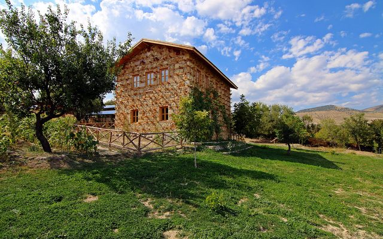
متحف قرية الأناضول الحية في الهواء الطلقأنقرة · متحفمتحف أنامورمرسين · متحف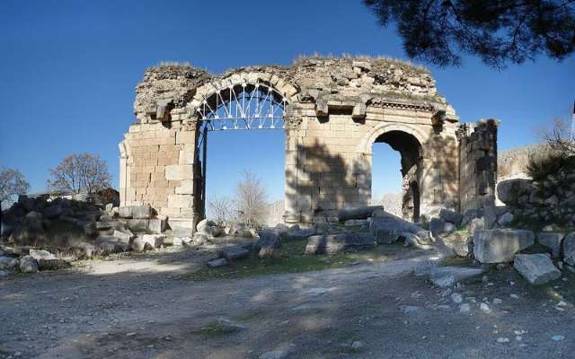
موقع أنافارزا الأثريأضنة · موقع أثري موقع أنيموريوم الأثريمرسين · موقع أثري
موقع أنيموريوم الأثريمرسين · موقع أثري قلعة أنقرةأنقرة · قلعة ومبنى تاريخي
قلعة أنقرةأنقرة · قلعة ومبنى تاريخي متحف الألعاب في أنقرةأنقرة · متحف
متحف الألعاب في أنقرةأنقرة · متحف المسرح الروماني في أنقرةأنقرة · موقع أثري
المسرح الروماني في أنقرةأنقرة · موقع أثري متحف بيت أتاتورك في أنطالياأنطاليا · متحف
متحف بيت أتاتورك في أنطالياأنطاليا · متحف متحف أنطاليا الإثنوغرافيأنطاليا · متحف
متحف أنطاليا الإثنوغرافيأنطاليا · متحف متحف أنطالياأنطاليا · متحفمتحف المقبرة القديمة في أنطالياأنطاليا · متحف
متحف أنطالياأنطاليا · متحفمتحف المقبرة القديمة في أنطالياأنطاليا · متحف متحف أنطاليا للألعابأنطاليا · متحف
متحف أنطاليا للألعابأنطاليا · متحف مدينة سيدرا القديمةأنطاليا · موقع أثري
مدينة سيدرا القديمةأنطاليا · موقع أثري مدينة أنتاندروس الأثريةباليكسير · موقع أثري
مدينة أنتاندروس الأثريةباليكسير · موقع أثري موقع أنطاكية بيسيديا الأثريإسبرطة · موقع أثري
موقع أنطاكية بيسيديا الأثريإسبرطة · موقع أثري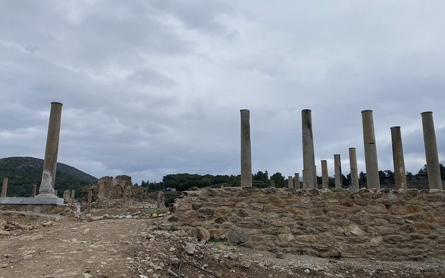
أنطاكية عند كراغوسأنطاليا · موقع أثري أنتيفيلوسأنطاليا · موقع أثري
أنتيفيلوسأنطاليا · موقع أثري كنيسة أنتيفونيتيسغيرنه (كيرينيا) · مبنى ديني
كنيسة أنتيفونيتيسغيرنه (كيرينيا) · مبنى ديني أنيت كبيرأنقرة · متحف
أنيت كبيرأنقرة · متحف مدينة أبيرلاي الأثريةأنطاليا · موقع أثري
مدينة أبيرلاي الأثريةأنطاليا · موقع أثري موقع معبد أبولو سمينثيوسجناق قلعة · موقع أثري
موقع معبد أبولو سمينثيوسجناق قلعة · موقع أثري مدينة أبولونيا (ليكيا)أنطاليا · موقع أثري
مدينة أبولونيا (ليكيا)أنطاليا · موقع أثري دير الرسول أندراوسإسكله (تريكومو) · مبنى ديني
دير الرسول أندراوسإسكله (تريكومو) · مبنى ديني متحف آرا غولرإسطنبول · متحف
متحف آرا غولرإسطنبول · متحف مدينة أرياسوس الأثريةأنطاليا · موقع أثري
مدينة أرياسوس الأثريةأنطاليا · موقع أثري مركز أركاس للفنونإزمير · متحفأرنيايأنطاليا · موقع أثري
مركز أركاس للفنونإزمير · متحفأرنيايأنطاليا · موقع أثري أرساداموغلا · موقع أثري
أرساداموغلا · موقع أثري موقع أرساميا الأثريأديامان · موقع أثري
موقع أرساميا الأثريأديامان · موقع أثري آرترإسطنبول · متحف
آرترإسطنبول · متحف موقع أريكاندا الأثريأنطاليا · موقع أثري
موقع أريكاندا الأثريأنطاليا · موقع أثري مجمع أصحاب الكهفقهرمان مرعش · مبنى ديني
مجمع أصحاب الكهفقهرمان مرعش · مبنى ديني المتحف العسكريإسطنبول · متحف
المتحف العسكريإسطنبول · متحف أسبندوسأنطاليا · موقع أثري
أسبندوسأنطاليا · موقع أثري موقع أسوس الأثريجناق قلعة · موقع أثريمتحف بيت أتاتورك في ديار بكرديار بكر · متحف
موقع أسوس الأثريجناق قلعة · موقع أثريمتحف بيت أتاتورك في ديار بكرديار بكر · متحف مسكن أتاتورك ومتحف السكك الحديديةأنقرة · متحف
مسكن أتاتورك ومتحف السكك الحديديةأنقرة · متحف متحف أتاتورك (شيشلي)إسطنبول · متحفمتحف أتاتورك والإثنوغرافيا في أوشاكعشاق · متحف
متحف أتاتورك (شيشلي)إسطنبول · متحفمتحف أتاتورك والإثنوغرافيا في أوشاكعشاق · متحف متحف أتاتورك والرديف والإثنوغرافياقوجه ايلي · متحف
متحف أتاتورك والرديف والإثنوغرافياقوجه ايلي · متحف متحف أطلس 1948 للسينما في إسطنبولإسطنبول · متحف
متحف أطلس 1948 للسينما في إسطنبولإسطنبول · متحف معبد أغسطسأنقرة · موقع أثري
معبد أغسطسأنقرة · موقع أثري متحف قصر كشك الصيدقوجه ايلي · متحف
متحف قصر كشك الصيدقوجه ايلي · متحف كنيسة آيا إيرينيإسطنبول · مبنى ديني
كنيسة آيا إيرينيإسطنبول · مبنى ديني قلعة أيانيسوان · موقع أثري
قلعة أيانيسوان · موقع أثري قلعة إياس (يومورطاليك)أضنة · قلعة ومبنى تاريخي
قلعة إياس (يومورطاليك)أضنة · قلعة ومبنى تاريخي متحف آيا صوفيا للتاريخ والتجربةإسطنبول · متحف
متحف آيا صوفيا للتاريخ والتجربةإسطنبول · متحف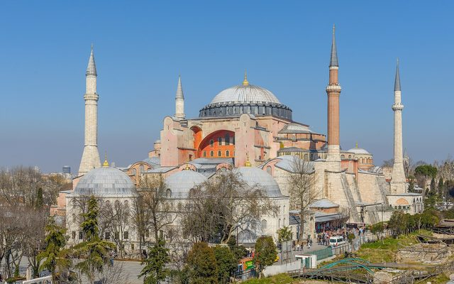
جامع آيا صوفيا الكبيرإسطنبول · مبنى ديني موقع بازيليكا القديس يوحنا (أياسولوك)إزمير · موقع أثري
موقع بازيليكا القديس يوحنا (أياسولوك)إزمير · موقع أثري قلعة أياسولوكإزمير · قلعة ومبنى تاريخي
قلعة أياسولوكإزمير · قلعة ومبنى تاريخي متحف آيدن الأثريآيدن · متحفبازيليكا آيا ترياسإسكله (تريكومو) · مبنى ديني
متحف آيدن الأثريآيدن · متحفبازيليكا آيا ترياسإسكله (تريكومو) · مبنى ديني قصر آينالي قاواكإسطنبول · قلعة ومبنى تاريخي
قصر آينالي قاواكإسطنبول · قلعة ومبنى تاريخي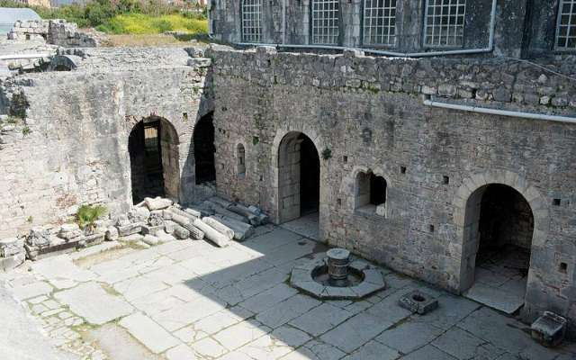
متحف القديس نيقولاوس التذكاريأنطاليا · متحفمدينة القديس مركوريوس تحت الأرضآق سراي · مدينة تحت الأرضطريق القديس بولسأنطاليا · مسار مشي تل العطشانة (ألالاخ)هاتاي · موقع أثري
تل العطشانة (ألالاخ)هاتاي · موقع أثري خان أغزي قرهآق سراي · قلعة ومبنى تاريخي
خان أغزي قرهآق سراي · قلعة ومبنى تاريخي متحف عاشق ويسلسيواس · متحف
متحف عاشق ويسلسيواس · متحف تل آشيقليآق سراي · موقع أثري
تل آشيقليآق سراي · موقع أثري متنزه بحيرة بافا الطبيعيموغلا · بحيرة
متنزه بحيرة بافا الطبيعيموغلا · بحيرة متحف بافراسامسون · متحف
متحف بافراسامسون · متحف قلعة بغراسهاتاي · قلعة ومبنى تاريخيمدينة بالبورا الأثريةبوردور · موقع أثري
قلعة بغراسهاتاي · قلعة ومبنى تاريخيمدينة بالبورا الأثريةبوردور · موقع أثري متحف القوى الوطنية في باليكسيرباليكسير · متحف
متحف القوى الوطنية في باليكسيرباليكسير · متحف بركة إبراهيم (بالِقلي غول)شانلي أورفا · مبنى ديني
بركة إبراهيم (بالِقلي غول)شانلي أورفا · مبنى ديني متحف بانديرماباليكسير · متحف
متحف بانديرماباليكسير · متحف متحف سفينة باندرماسامسون · متحف
متحف سفينة باندرماسامسون · متحف متحف البربريةليفكوشا (نيقوسيا) · متحف
متحف البربريةليفكوشا (نيقوسيا) · متحف بارغيلياموغلا · موقع أثري
بارغيلياموغلا · موقع أثري متحف باتمانباطمان · متحف
متحف باتمانباطمان · متحف متحف مقر الجبهة الغربيةقونية · متحف
متحف مقر الجبهة الغربيةقونية · متحف متحف باكسي في بايبورتبايبورت · متحفكهف بلديبيأنطاليا · موقع أثري
متحف باكسي في بايبورتبايبورت · متحفكهف بلديبيأنطاليا · موقع أثري دير بيلاپايسغيرنه (كيرينيا) · مبنى ديني
دير بيلاپايسغيرنه (كيرينيا) · مبنى ديني متحف برغامةإزمير · متحف
متحف برغامةإزمير · متحف متحف ثقافة الحمّام في بايزيدإسطنبول · متحف
متحف ثقافة الحمّام في بايزيدإسطنبول · متحف بيجه سلطاندنيزلي · موقع أثري
بيجه سلطاندنيزلي · موقع أثري متحف الزجاج والبلور في بيكوزإسطنبول · متحف
متحف الزجاج والبلور في بيكوزإسطنبول · متحف قصر بيلربييإسطنبول · قلعة ومبنى تاريخي
قصر بيلربييإسطنبول · قلعة ومبنى تاريخي متحف بيبازاري الحيأنقرة · متحف
متحف بيبازاري الحيأنقرة · متحف متنزه بحيرة بيشهير الوطنيقونية · بحيرةمتحف بيش قوناقلار الإثنوغرافي والبيت الملطي التقليديملطية · متحف
متنزه بحيرة بيشهير الوطنيقونية · بحيرةمتحف بيش قوناقلار الإثنوغرافي والبيت الملطي التقليديملطية · متحف جبال بش بارماك (بنتاداكتيلوس)غيرنه (كيرينيا) · موقع طبيعيمتحف بيله جكبيله جك · متحف
جبال بش بارماك (بنتاداكتيلوس)غيرنه (كيرينيا) · موقع طبيعيمتحف بيله جكبيله جك · متحف تلال بين تبه الليديةمانيسا · موقع أثري
تلال بين تبه الليديةمانيسا · موقع أثري بين بير كيليسه (ألف كنيسة وكنيسة)كرمان · موقع أثري
بين بير كيليسه (ألف كنيسة وكنيسة)كرمان · موقع أثري صهريج بين بير ديرك (فيلوكسينوس)إسطنبول · قلعة ومبنى تاريخي
صهريج بين بير ديرك (فيلوكسينوس)إسطنبول · قلعة ومبنى تاريخي الجزر العائمة في بينغولبينغول · بحيرة
الجزر العائمة في بينغولبينغول · بحيرة قصر تشاكير آغا في بيرغيإزمير · متحفمتحف بدليس الإثنوغرافيبدليس · متحف
قصر تشاكير آغا في بيرغيإزمير · متحفمتحف بدليس الإثنوغرافيبدليس · متحف قلعة بدليسبدليس · قلعة ومبنى تاريخي
قلعة بدليسبدليس · قلعة ومبنى تاريخي موقع بلاوندوس الأثريعشاق · موقع أثري
موقع بلاوندوس الأثريعشاق · موقع أثري مسرح بودروم القديمموغلا · موقع أثريقاعة حطام الزجاج في سرجه ليماني ببودرومموغلا · متحف
مسرح بودروم القديمموغلا · موقع أثريقاعة حطام الزجاج في سرجه ليماني ببودرومموغلا · متحف متحف بودروم لآثار ما تحت الماءموغلا · متحف
متحف بودروم لآثار ما تحت الماءموغلا · متحف قلعة بولامانأوردو · قلعة ومبنى تاريخي
قلعة بولامانأوردو · قلعة ومبنى تاريخي متحف بولوبولو · متحف
متحف بولوبولو · متحف بونجوكلو هويوكقونية · موقع أثري
بونجوكلو هويوكقونية · موقع أثري متحف بوستانلي الأثري المفتوحإزمير · متحف
متحف بوستانلي الأثري المفتوحإزمير · متحف قناطر بوزدوغان (قناة فالنس)إسطنبول · قلعة ومبنى تاريخيمتحف الجبن في بوغاتبهقارص · متحف
قناطر بوزدوغان (قناة فالنس)إسطنبول · قلعة ومبنى تاريخيمتحف الجبن في بوغاتبهقارص · متحف متحف بوغاز كويجوروم · متحف
متحف بوغاز كويجوروم · متحف قلعة بوفافنتوغيرنه (كيرينيا) · قلعة ومبنى تاريخي
قلعة بوفافنتوغيرنه (كيرينيا) · قلعة ومبنى تاريخي كنيسة القديس استفانوس البلغارية (الكنيسة الحديدية)إسطنبول · مبنى ديني
كنيسة القديس استفانوس البلغارية (الكنيسة الحديدية)إسطنبول · مبنى ديني متحف بوردوربوردور · متحف
متحف بوردوربوردور · متحف متحف بورصة الأثريبورصة · متحف
متحف بورصة الأثريبورصة · متحف متحف بيت أتاتورك في بورصةبورصة · متحف
متحف بيت أتاتورك في بورصةبورصة · متحف متحف مدينة بورصةبورصة · متحف
متحف مدينة بورصةبورصة · متحف متحف الآثار التركية والإسلامية في بورصةبورصة · متحف
متحف الآثار التركية والإسلامية في بورصةبورصة · متحف الجامع الكبير في بورصةبورصة · مبنى ديني
الجامع الكبير في بورصةبورصة · مبنى ديني الجامع الأخضر والضريح الأخضر في بورصةبورصة · مبنى دينيبازيليكا بحيرة إزنيكبورصة · مبنى ديني
الجامع الأخضر والضريح الأخضر في بورصةبورصة · مبنى دينيبازيليكا بحيرة إزنيكبورصة · مبنى ديني مدرسة بيوك آغاأماسيا · مبنى ديني
مدرسة بيوك آغاأماسيا · مبنى ديني الخان الكبيرليفكوشا (نيقوسيا) · قلعة ومبنى تاريخي
الخان الكبيرليفكوشا (نيقوسيا) · قلعة ومبنى تاريخي متحف فسيفساء القصر الكبيرإسطنبول · متحف
متحف فسيفساء القصر الكبيرإسطنبول · متحف مدرسة جاجا بكقير شهر · مبنى ديني
مدرسة جاجا بكقير شهر · مبنى ديني متحف بيت جاهد صدقي ترانجي الإثنوغرافيديار بكر · متحف
متحف بيت جاهد صدقي ترانجي الإثنوغرافيديار بكر · متحف كهوف جهنم آغزيزونغولداق · موقع طبيعي
كهوف جهنم آغزيزونغولداق · موقع طبيعي جسر جندرهأديامان · قلعة ومبنى تاريخي
جسر جندرهأديامان · قلعة ومبنى تاريخي متحف جندره للفنونإسطنبول · متحف
متحف جندره للفنونإسطنبول · متحف جيرموديرنأنقرة · متحف
جيرموديرنأنقرة · متحف خان جنجيكارابوك · قلعة ومبنى تاريخي
خان جنجيكارابوك · قلعة ومبنى تاريخي المدرسة الحمراء في الجزيرة (جزرة)شرناق · قلعة ومبنى تاريخي
المدرسة الحمراء في الجزيرة (جزرة)شرناق · قلعة ومبنى تاريخي قرية جومالي قيزيكبورصة · قلعة ومبنى تاريخي
قرية جومالي قيزيكبورصة · قلعة ومبنى تاريخي متحف الجمهوريةأنقرة · متحف
متحف الجمهوريةأنقرة · متحف نهر دالامانموغلا · التجديف في المياه السريعة
نهر دالامانموغلا · التجديف في المياه السريعة موقع دارا الأثريماردين · موقع أثري
موقع دارا الأثريماردين · موقع أثري مدينة داسكيليون الأثريةباليكسير · موقع أثريمنتجع داوراز للتزلجإسبرطة · منتجع تزلجمسبك دمير كويقرقلر ايلي · موقع أثري
مدينة داسكيليون الأثريةباليكسير · موقع أثريمنتجع داوراز للتزلجإسبرطة · منتجع تزلجمسبك دمير كويقرقلر ايلي · موقع أثري متحف أتاتورك والإثنوغرافيا في دنيزليدنيزلي · متحف
متحف أتاتورك والإثنوغرافيا في دنيزليدنيزلي · متحف متحف مدينة دنيزليدنيزلي · متحف
متحف مدينة دنيزليدنيزلي · متحف موقع تريبوليس الأثريدنيزلي · موقع أثريدربةكرمان · موقع أثري
موقع تريبوليس الأثريدنيزلي · موقع أثريدربةكرمان · موقع أثري قصر درويش باشاليفكوشا (نيقوسيا) · متحف
قصر درويش باشاليفكوشا (نيقوسيا) · متحف مقبرة الدولةأنقرة · قلعة ومبنى تاريخي
مقبرة الدولةأنقرة · قلعة ومبنى تاريخي متحف سيارات دَفريمإسكي شهر · متحف
متحف سيارات دَفريمإسكي شهر · متحف دير الزعفرانماردين · مبنى ديني
دير الزعفرانماردين · مبنى ديني نفق دجلة (كهوف بيركلين)ديار بكر · موقع أثري
نفق دجلة (كهوف بيركلين)ديار بكر · موقع أثري معبد أبولو في ديديمآيدن · موقع أثري
معبد أبولو في ديديمآيدن · موقع أثري الجامع الكبير ودار الشفاء في ديفريغيسيواس · مبنى ديني
الجامع الكبير ودار الشفاء في ديفريغيسيواس · مبنى ديني متحف ديار بكر الأثريديار بكر · متحف
متحف ديار بكر الأثريديار بكر · متحف أسوار ديار بكرديار بكر · قلعة ومبنى تاريخي
أسوار ديار بكرديار بكر · قلعة ومبنى تاريخي الجامع الكبير في ديار بكرديار بكر · مبنى ديني
الجامع الكبير في ديار بكرديار بكر · مبنى ديني قصر دولمه بهتشهإسطنبول · قلعة ومبنى تاريخيمتحف التاريخ الطبيعيبوردور · متحف
قصر دولمه بهتشهإسطنبول · قلعة ومبنى تاريخيمتحف التاريخ الطبيعيبوردور · متحف كهف دوبنيساقرقلر ايلي · موقع طبيعي
كهف دوبنيساقرقلر ايلي · موقع طبيعي شلالات دودنأنطاليا · شلالدولوك (دوليخه)غازي عنتاب · موقع أثري
شلالات دودنأنطاليا · شلالدولوك (دوليخه)غازي عنتاب · موقع أثري كنيس أدرنة الكبيرأدرنة · مبنى دينيمتحف تاريخ البلقان في تحصين خضرلكأدرنة · متحف
كنيس أدرنة الكبيرأدرنة · مبنى دينيمتحف تاريخ البلقان في تحصين خضرلكأدرنة · متحف البرج المقدوني في أدرنةأدرنة · قلعة ومبنى تاريخي
البرج المقدوني في أدرنةأدرنة · قلعة ومبنى تاريخي متحف أدرنةأدرنة · متحف
متحف أدرنةأدرنة · متحف قصر أدرنة (السراي الجديد)أدرنة · موقع أثري
قصر أدرنة (السراي الجديد)أدرنة · موقع أثري جامع السليمية في أدرنةأدرنة · مبنى دينيمتحف تجربة أفسسإزمير · متحف
جامع السليمية في أدرنةأدرنة · مبنى دينيمتحف تجربة أفسسإزمير · متحف متحف أفسسإزمير · متحف
متحف أفسسإزمير · متحف بيوت المنحدر في أفسسإزمير · موقع أثري
بيوت المنحدر في أفسسإزمير · موقع أثري نصب أفلاطون بينار الحيثيقونية · موقع أثريمتحف التاريخ الطبيعي بجامعة إيجهإزمير · متحف
نصب أفلاطون بينار الحيثيقونية · موقع أثريمتحف التاريخ الطبيعي بجامعة إيجهإزمير · متحف إلايوسا سيباستيمرسين · موقع أثريمتحف إلازيغإلازيغ · متحفمتحف مدينة البستانقهرمان مرعش · متحف
إلايوسا سيباستيمرسين · موقع أثريمتحف إلازيغإلازيغ · متحفمتحف مدينة البستانقهرمان مرعش · متحف متحف إلغيز للفن المعاصرإسطنبول · متحفمتحف إلماليأنطاليا · متحفمتحف أمينة غوغوش للمطبخغازي عنتاب · متحف
متحف إلغيز للفن المعاصرإسطنبول · متحفمتحف إلماليأنطاليا · متحفمتحف أمينة غوغوش للمطبخغازي عنتاب · متحف جامع أمير سلطانبورصة · مبنى ديني
جامع أمير سلطانبورصة · مبنى ديني قلعة إينز (آينوس)أدرنة · قلعة ومبنى تاريخي
قلعة إينز (آينوس)أدرنة · قلعة ومبنى تاريخي موقع إنكومي (ألاسيا) الأثريغازي ماغوسا (فاماغوستا) · موقع أثري
موقع إنكومي (ألاسيا) الأثريغازي ماغوسا (فاماغوستا) · موقع أثري منتجع أرجيس للتزلجقيصري · منتجع تزلجمتحف أرغليقونية · متحف
منتجع أرجيس للتزلجقيصري · منتجع تزلجمتحف أرغليقونية · متحف شلالات تاتليجا (أرفلك)سينوب · شلال
شلالات تاتليجا (أرفلك)سينوب · شلال متحف إريمتان للآثار والفنونأنقرة · متحفمتحف أحمد كلش أوغلو للآثار والإثنوغرافيا في أرمناككرمان · متحف
متحف إريمتان للآثار والفنونأنقرة · متحفمتحف أحمد كلش أوغلو للآثار والإثنوغرافيا في أرمناككرمان · متحف مدينة إريثراي الأثريةإزمير · موقع أثري
مدينة إريثراي الأثريةإزمير · موقع أثري متحف أرزنجانأرزنجان · متحف
متحف أرزنجانأرزنجان · متحف متحف بيت أتاتورك في أرضرومأرضروم · متحف
متحف بيت أتاتورك في أرضرومأرضروم · متحف قلعة أرضرومأرضروم · قلعة ومبنى تاريخي
قلعة أرضرومأرضروم · قلعة ومبنى تاريخي متحف أرضرومأرضروم · متحفمتحف الرسم والنحت في أرضرومأرضروم · متحف
متحف أرضرومأرضروم · متحفمتحف الرسم والنحت في أرضرومأرضروم · متحف سميرنا القديمةإزمير · موقع أثري
سميرنا القديمةإزمير · موقع أثري متحف التحرير في إسكي شهيرإسكي شهر · متحفإيتيناأنطاليا · موقع أثري
متحف التحرير في إسكي شهيرإسكي شهر · متحفإيتيناأنطاليا · موقع أثري متحف إيتي الأثريإسكي شهر · متحف
متحف إيتي الأثريإسكي شهر · متحف المتحف الإثنوغرافيأنقرة · متحف
المتحف الإثنوغرافيأنقرة · متحف طريق أوليا چلبيكوتاهية · مسار مشي
طريق أوليا چلبيكوتاهية · مسار مشي جامع أبي أيوب الأنصاريإسطنبول · مبنى ديني
جامع أبي أيوب الأنصاريإسطنبول · مبنى ديني قلعة إيغيل ومقامات الأنبياءديار بكر · قلعة ومبنى تاريخي
قلعة إيغيل ومقامات الأنبياءديار بكر · قلعة ومبنى تاريخي بحيرة إغيرديرإسبرطة · بحيرة
بحيرة إغيرديرإسبرطة · بحيرة متحف رسوم الكاريكاتير التعليميةإسكي شهر · متحف
متحف رسوم الكاريكاتير التعليميةإسكي شهر · متحف نُصب فاسيلارقونية · موقع أثريالبطريركية المسكونية وكنيسة القديس جاورجيوسإسطنبول · مبنى ديني
نُصب فاسيلارقونية · موقع أثريالبطريركية المسكونية وكنيسة القديس جاورجيوسإسطنبول · مبنى ديني متحف فنربخشةإسطنبول · متحف
متحف فنربخشةإسطنبول · متحف جزيرة جميلر في فتحيةموغلا · موقع أثري
جزيرة جميلر في فتحيةموغلا · موقع أثري موقع قايا كوي في فتحيةموغلا · موقع أثري
موقع قايا كوي في فتحيةموغلا · موقع أثري موقع ليتون الأثري في فتحيةموغلا · موقع أثري
موقع ليتون الأثري في فتحيةموغلا · موقع أثري متحف فتحيةإسطنبول · متحف
متحف فتحيةإسطنبول · متحف متحف فتحيةموغلا · متحف
متحف فتحيةموغلا · متحف موقع بينارا الأثري في فتحيةموغلا · موقع أثري
موقع بينارا الأثري في فتحيةموغلا · موقع أثري موقع تلوس الأثري (فتحية)موغلا · موقع أثريصهريج فيلداميإسطنبول · قلعة ومبنى تاريخيموقع فيليوس (تيوس) الأثريزونغولداق · موقع أثري
موقع تلوس الأثري (فتحية)موغلا · موقع أثريصهريج فيلداميإسطنبول · قلعة ومبنى تاريخيموقع فيليوس (تيوس) الأثريزونغولداق · موقع أثري كشك أتاتورك البحري في فلورياإسطنبول · متحف
كشك أتاتورك البحري في فلورياإسطنبول · متحف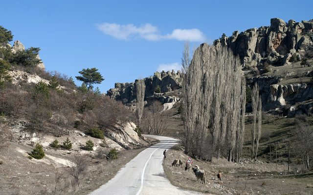
الطريق الفريجيإسكي شهر · مسار مشي جدول فيرتيناريزه · التجديف في المياه السريعةغاغايأنطاليا · موقع أثري
جدول فيرتيناريزه · التجديف في المياه السريعةغاغايأنطاليا · موقع أثري متحف التكية المولوية في غلطةإسطنبول · متحف
متحف التكية المولوية في غلطةإسطنبول · متحف قصر غازيديار بكر · قلعة ومبنى تاريخي
قصر غازيديار بكر · قلعة ومبنى تاريخي متحف الغازيسامسون · متحف
متحف الغازيسامسون · متحف متحف غازي عنتاب الأثريغازي عنتاب · متحف
متحف غازي عنتاب الأثريغازي عنتاب · متحف قلعة غازي عنتابغازي عنتاب · قلعة ومبنى تاريخي
قلعة غازي عنتابغازي عنتاب · قلعة ومبنى تاريخي متحف بانوراما الدفاع عن غازي عنتابغازي عنتاب · متحف
متحف بانوراما الدفاع عن غازي عنتابغازي عنتاب · متحف متحف الحرب في غيليبولوجناق قلعة · متحف
متحف الحرب في غيليبولوجناق قلعة · متحف موقع غاليبولي التاريخيجناق قلعة · موقع أثري
موقع غاليبولي التاريخيجناق قلعة · موقع أثري مقام غيرغاآيدن · موقع أثريمنطقة فسيفساء جرمانيكياقهرمان مرعش · موقع أثري
مقام غيرغاآيدن · موقع أثريمنطقة فسيفساء جرمانيكياقهرمان مرعش · موقع أثري قلعة غيرسونغيرسون · قلعة ومبنى تاريخي
قلعة غيرسونغيرسون · قلعة ومبنى تاريخي متحف غيرسونغيرسون · متحف
متحف غيرسونغيرسون · متحف شلال غيرلفيكأرزنجان · شلال
شلال غيرلفيكأرزنجان · شلال مسار جبال كيرينياغيرنه (كيرينيا) · مسار مشي
مسار جبال كيرينياغيرنه (كيرينيا) · مسار مشي قلعة كيرينيا ومتحف حطام السفينةغيرنه (كيرينيا) · قلعة ومبنى تاريخي
قلعة كيرينيا ومتحف حطام السفينةغيرنه (كيرينيا) · قلعة ومبنى تاريخي متحف الأيقونات في كيرينياغيرنه (كيرينيا) · متحف
متحف الأيقونات في كيرينياغيرنه (كيرينيا) · متحف غوك قلعةمرسين · موقع أثري
غوك قلعةمرسين · موقع أثري متحف الشطرنج لوقف غوكيايأنقرة · متحف
متحف الشطرنج لوقف غوكيايأنقرة · متحف متنزه بحيرة غولجوك البركانية الطبيعيإسبرطة · بحيرة
متنزه بحيرة غولجوك البركانية الطبيعيإسبرطة · بحيرة غوليازي (أبولونيا عند ريندكوس)بورصة · موقع أثري
غوليازي (أبولونيا عند ريندكوس)بورصة · موقع أثري وادي غوينوكأنطاليا · وادٍ عميق (كانيون)
وادي غوينوكأنطاليا · وادٍ عميق (كانيون) قلعة غوزنهمرسين · قلعة ومبنى تاريخي
قلعة غوزنهمرسين · قلعة ومبنى تاريخي كنيسة القديس يوحنا في غولشهيرنوشهر · مبنى دينيمتحف غوموشهانهغوموشهانه · متحف
كنيسة القديس يوحنا في غولشهيرنوشهر · مبنى دينيمتحف غوموشهانهغوموشهانه · متحف ضريح غوموش كسنموغلا · موقع أثري
ضريح غوموش كسنموغلا · موقع أثري دير غوموشلر ومدينته تحت الأرضنيغدة · مدينة تحت الأرض
دير غوموشلر ومدينته تحت الأرضنيغدة · مدينة تحت الأرض متحف قصر غوبغوب أوغلو الإثنوغرافيقيصري · متحف
متحف قصر غوبغوب أوغلو الإثنوغرافيقيصري · متحف متحف غوزليورت للآثار والتاريخ الطبيعيغوزليورت (مورفو) · متحف
متحف غوزليورت للآثار والتاريخ الطبيعيغوزليورت (مورفو) · متحف غوزل يورت ووادي الأديرةآق سراي · مبنى ديني
غوزل يورت ووادي الأديرةآق سراي · مبنى ديني دير كتوتسوان · مبنى ديني
دير كتوتسوان · مبنى ديني جامع حبيب النجارهاتاي · مبنى ديني
جامع حبيب النجارهاتاي · مبنى ديني جامع حاجي بيرم وليأنقرة · مبنى ديني
جامع حاجي بيرم وليأنقرة · مبنى ديني متحف حاجي بكتاشنوشهر · متحف
متحف حاجي بكتاشنوشهر · متحف تل حاجيلاربوردور · موقع أثري
تل حاجيلاربوردور · موقع أثري بوابة هادريان (الأبواب الثلاثة)أنطاليا · قلعة ومبنى تاريخيموقع هادريانوبوليس الأثريكارابوك · موقع أثري
بوابة هادريان (الأبواب الثلاثة)أنطاليا · قلعة ومبنى تاريخيموقع هادريانوبوليس الأثريكارابوك · موقع أثري متحف ذاكرة 15 يوليوإسطنبول · متحفمدرسة الميدان في هكاريهكاري · قلعة ومبنى تاريخي
متحف ذاكرة 15 يوليوإسطنبول · متحفمدرسة الميدان في هكاريهكاري · قلعة ومبنى تاريخي متحف فسيفساء حلبي باغجهشانلي أورفا · متحفتحصين الحميدية ومتحف تاريخ معارك جناق قلعةجناق قلعة · متحف
متحف فسيفساء حلبي باغجهشانلي أورفا · متحفتحصين الحميدية ومتحف تاريخ معارك جناق قلعةجناق قلعة · متحف خان البعرورشانلي أورفا · قلعة ومبنى تاريخيشلالات حربيةهاتاي · شلال
خان البعرورشانلي أورفا · قلعة ومبنى تاريخيشلالات حربيةهاتاي · شلال قلعة خربوطإلازيغ · قلعة ومبنى تاريخي
قلعة خربوطإلازيغ · قلعة ومبنى تاريخي موقع حران الأثريشانلي أورفا · موقع أثري
موقع حران الأثريشانلي أورفا · موقع أثري قلعة حرشنةأماسيا · قلعة ومبنى تاريخي
قلعة حرشنةأماسيا · قلعة ومبنى تاريخي خان حسن باشاديار بكر · قلعة ومبنى تاريخي
خان حسن باشاديار بكر · قلعة ومبنى تاريخي متحف حسن سوزر الإثنوغرافيغازي عنتاب · متحف
متحف حسن سوزر الإثنوغرافيغازي عنتاب · متحف متحف وموقع حصن كيفا الأثريباطمان · موقع أثري
متحف وموقع حصن كيفا الأثريباطمان · موقع أثري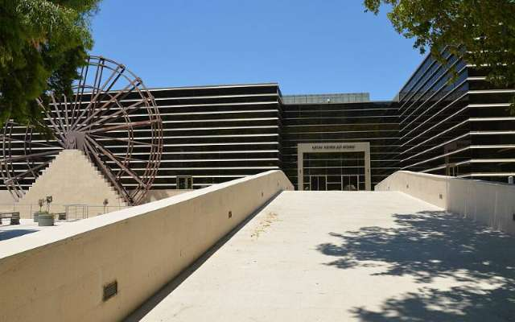
متحف هاتاي الأثريهاتاي · متحفمتحف نجمي أصفور أوغلو الأثري في هاتايهاتاي · متحف متحف القوات الجوية في أنقرةأنقرة · متحف
متحف القوات الجوية في أنقرةأنقرة · متحف كنيسة الرسل (جامع كومبت)قارص · مبنى دينيبيت أتاتورك في هافزاسامسون · متحف
كنيسة الرسل (جامع كومبت)قارص · مبنى دينيبيت أتاتورك في هافزاسامسون · متحف بحيرة هزارإلازيغ · بحيرة
بحيرة هزارإلازيغ · بحيرة قصر هازيرانلارأماسيا · متحف
قصر هازيرانلارأماسيا · متحف نصب هيليس التذكاريجناق قلعة · موقع أثري
نصب هيليس التذكاريجناق قلعة · موقع أثري هيراكليا عند لاتموسموغلا · موقع أثري
هيراكليا عند لاتموسموغلا · موقع أثري هيراكليا سالباكيدنيزلي · موقع أثري
هيراكليا سالباكيدنيزلي · موقع أثري متحف هيرابوليس الأثري (باموكالي)دنيزلي · متحفمتحف هلمي نقيب أوغلو للكاميراتإسطنبول · متحفمتحف هيسارت للتاريخ الحي والديوراماإسطنبول · متحف
متحف هيرابوليس الأثري (باموكالي)دنيزلي · متحفمتحف هلمي نقيب أوغلو للكاميراتإسطنبول · متحفمتحف هيسارت للتاريخ الحي والديوراماإسطنبول · متحف الطريق الحثيجوروم · مسار مشي
الطريق الحثيجوروم · مسار مشي وادي هورماقسطموني · وادٍ عميق (كانيون)
وادي هورماقسطموني · وادٍ عميق (كانيون) قلعة خوشابوان · قلعة ومبنى تاريخيهيلاريماموغلا · موقع أثري
قلعة خوشابوان · قلعة ومبنى تاريخيهيلاريماموغلا · موقع أثري موقع ياسوس الأثريموغلا · موقع أثري
موقع ياسوس الأثريموغلا · موقع أثري إيديبيسوسأنطاليا · موقع أثري
إيديبيسوسأنطاليا · موقع أثري قصر الزيزفون (إيهلامور)إسطنبول · قلعة ومبنى تاريخي
قصر الزيزفون (إيهلامور)إسطنبول · قلعة ومبنى تاريخي وادي إهلاراآق سراي · موقع أثري
وادي إهلاراآق سراي · موقع أثري منتجع إلغاز للتزلجقسطموني · منتجع تزلج
منتجع إلغاز للتزلجقسطموني · منتجع تزلج مدينة يوتابي الأثريةأنطاليا · موقع أثري
مدينة يوتابي الأثريةأنطاليا · موقع أثري جسر إرغانديبورصة · قلعة ومبنى تاريخيإيسينداأنطاليا · موقع أثري
جسر إرغانديبورصة · قلعة ومبنى تاريخيإيسينداأنطاليا · موقع أثري متحف إسبرطةإسبرطة · متحف
متحف إسبرطةإسبرطة · متحف نصب ومتحف شهداء الأتراك في إغديرإغدير · متحفمتحف الدركأنقرة · متحف
نصب ومتحف شهداء الأتراك في إغديرإغدير · متحفمتحف الدركأنقرة · متحف مقبرة جوليوبوليسأنقرة · موقع أثري
مقبرة جوليوبوليسأنقرة · موقع أثري جسر جستنيان (بش كوبرو)سكاريا · قلعة ومبنى تاريخي
جسر جستنيان (بش كوبرو)سكاريا · قلعة ومبنى تاريخي مركز كاباتبه التعريفيجناق قلعة · متحف
مركز كاباتبه التعريفيجناق قلعة · متحف قلعة قديفة (جبل باغوس)إزمير · قلعة ومبنى تاريخي
قلعة قديفة (جبل باغوس)إزمير · قلعة ومبنى تاريخي مدينة كادياندا الأثريةموغلا · موقع أثريموقع قادي قلعة الأثريآيدن · موقع أثريمتحف شهداء 15 يوليو والديمقراطية في قهرمان قازانأنقرة · متحف
مدينة كادياندا الأثريةموغلا · موقع أثريموقع قادي قلعة الأثريآيدن · موقع أثريمتحف شهداء 15 يوليو والديمقراطية في قهرمان قازانأنقرة · متحف متحف قهرمان مرعشقهرمان مرعش · متحف
متحف قهرمان مرعشقهرمان مرعش · متحف قلعة يني قلعة في كاهتاأديامان · موقع أثري
قلعة يني قلعة في كاهتاأديامان · موقع أثري متحف قامان قلعة هويوك الأثريقير شهر · موقع أثريمتحف الزلازل في قنديليإسطنبول · متحفكانديباأنطاليا · موقع أثري
متحف قامان قلعة هويوك الأثريقير شهر · موقع أثريمتحف الزلازل في قنديليإسطنبول · متحفكانديباأنطاليا · موقع أثري موقع قانلي ديوانه الأثريمرسين · موقع أثري
موقع قانلي ديوانه الأثريمرسين · موقع أثري قانلي ديوانه (كانيتيليس)مرسين · موقع أثري
قانلي ديوانه (كانيتيليس)مرسين · موقع أثري قلعة كانتاراإسكله (تريكومو) · قلعة ومبنى تاريخي
قلعة كانتاراإسكله (تريكومو) · قلعة ومبنى تاريخي شلالات كابوزباشيقيصري · شلال
شلالات كابوزباشيقيصري · شلال مقبرة كابيلي قايا الصخريةجوروم · موقع أثري
مقبرة كابيلي قايا الصخريةجوروم · موقع أثري نقش كارابل الصخريإزمير · موقع أثري
نقش كارابل الصخريإزمير · موقع أثري متحف صفرانبولوكارابوك · متحف
متحف صفرانبولوكارابوك · متحف متحف قره جاسو الإثنوغرافيآيدن · متحف
متحف قره جاسو الإثنوغرافيآيدن · متحف متحف قره دنيز أرغليزونغولداق · متحف
متحف قره دنيز أرغليزونغولداق · متحف قره غول (بورچكا)أرتفين · بحيرة
قره غول (بورچكا)أرتفين · بحيرة موقع قره هان تبه الأثريشانلي أورفا · موقع أثري
موقع قره هان تبه الأثريشانلي أورفا · موقع أثري كهف قره إينأنطاليا · موقع طبيعي
كهف قره إينأنطاليا · موقع طبيعي قره قباقليمرسين · موقع أثري
قره قباقليمرسين · موقع أثري تل قره قوشأديامان · موقع أثري
تل قره قوشأديامان · موقع أثري متحف كرمانكرمان · متحف
متحف كرمانكرمان · متحف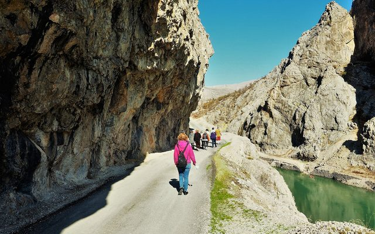
الوادي المظلم (كارانليك كانيون)أرزنجان · وادٍ عميق (كانيون) متحف قراطاي (متحف البلاط)قونية · متحف
متحف قراطاي (متحف البلاط)قونية · متحف متحف وموقع قره تبه – أصلان طاشعثمانية · موقع أثري
متحف وموقع قره تبه – أصلان طاشعثمانية · موقع أثري الطريق الكاريموغلا · مسار مشي
الطريق الكاريموغلا · مسار مشي جامع كاريه (خورا)إسطنبول · مبنى ديني
جامع كاريه (خورا)إسطنبول · مبنى ديني مدينة كركميش الأثريةغازي عنتاب · موقع أثري
مدينة كركميش الأثريةغازي عنتاب · موقع أثري متنزه كارباز الوطني وشاطئ غولدن بيتشإسكله (تريكومو) · موقع طبيعي
متنزه كارباز الوطني وشاطئ غولدن بيتشإسكله (تريكومو) · موقع طبيعي متحف تاريخ حرب جبهة القوقاز في قارصقارص · متحف
متحف تاريخ حرب جبهة القوقاز في قارصقارص · متحف قلعة قارصقارص · قلعة ومبنى تاريخي
قلعة قارصقارص · قلعة ومبنى تاريخي متحف قارصقارص · متحفمنتجع كارتال كايا للتزلجبولو · منتجع تزلج
متحف قارصقارص · متحفمنتجع كارتال كايا للتزلجبولو · منتجع تزلج منتجع كارتبه للتزلجقوجه ايلي · منتجع تزلج
منتجع كارتبه للتزلجقوجه ايلي · منتجع تزلج موقع كاستابالا الأثريعثمانية · موقع أثري
موقع كاستابالا الأثريعثمانية · موقع أثري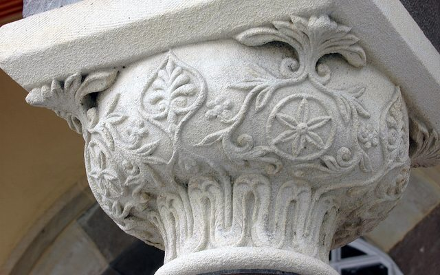
متحف قسطمونيقسطموني · متحف المدرسة القاسميةماردين · مبنى ديني
المدرسة القاسميةماردين · مبنى ديني موقع كاونوس الأثريموغلا · موقع أثري
موقع كاونوس الأثريموغلا · موقع أثري متحف قيصري الأثريقيصري · متحف
متحف قيصري الأثريقيصري · متحف متحف بيت أتاتورك في قيصريقيصري · متحف
متحف بيت أتاتورك في قيصريقيصري · متحف قلعة قيصريقيصري · قلعة ومبنى تاريخي
قلعة قيصريقيصري · قلعة ومبنى تاريخي جبال كاچكارريزه · مسار مشي
جبال كاچكارريزه · مسار مشي مدينة كيكوفا الغارقةأنطاليا · موقع أثري
مدينة كيكوفا الغارقةأنطاليا · موقع أثري مدينة كيليندريس الأثريةمرسين · موقع أثري
مدينة كيليندريس الأثريةمرسين · موقع أثري متحف كمال سونالإسطنبول · متحفكمالية (إغين)أرزنجان · قلعة ومبنى تاريخي
متحف كمال سونالإسطنبول · متحفكمالية (إغين)أرزنجان · قلعة ومبنى تاريخي جسر كمرموغلا · قلعة ومبنى تاريخي
جسر كمرموغلا · قلعة ومبنى تاريخي مدينة كيراموس الأثريةموغلا · موقع أثري
مدينة كيراموس الأثريةموغلا · موقع أثري مدينة كيركينيس الأثريةيوزغات · موقع أثري
مدينة كيركينيس الأثريةيوزغات · موقع أثري مدينة صولو مغارة تحت الأرض في كسكينقيريق قلعة · مدينة تحت الأرض
مدينة صولو مغارة تحت الأرض في كسكينقيريق قلعة · مدينة تحت الأرض متحف كيإزمير · متحف
متحف كيإزمير · متحف موقع كيبيرا الأثريبوردور · موقع أثريمتحف كلسكلس · متحف
موقع كيبيرا الأثريبوردور · موقع أثريمتحف كلسكلس · متحف كيليستراقونية · موقع أثري
كيليستراقونية · موقع أثري متحف قلعة كليت بحرجناق قلعة · متحف
متحف قلعة كليت بحرجناق قلعة · متحف قلعة كيليد البحرجناق قلعة · قلعة ومبنى تاريخي
قلعة كيليد البحرجناق قلعة · قلعة ومبنى تاريخي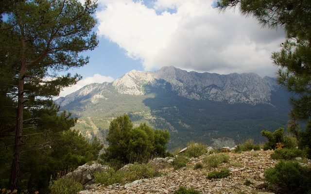
كيتاناوراأنطاليا · موقع أثري موقع كلاروس الأثريإزمير · موقع أثري
موقع كلاروس الأثريإزمير · موقع أثري موقع كلازوميناي الأثريإزمير · موقع أثري
موقع كلازوميناي الأثريإزمير · موقع أثري متحف قوجه ايلي الأثريقوجه ايلي · متحف
متحف قوجه ايلي الأثريقوجه ايلي · متحف كولوفونإزمير · موقع أثريكومانا بونتيكاتوقات · موقع أثري
كولوفونإزمير · موقع أثريكومانا بونتيكاتوقات · موقع أثري متحف قونور ألبدوزجه · متحف
متحف قونور ألبدوزجه · متحف متحف قونية الأثريقونية · متحف
متحف قونية الأثريقونية · متحف متحف بيت أتاتورك في قونيةقونية · متحف
متحف بيت أتاتورك في قونيةقونية · متحف متحف قونية الإثنوغرافيقونية · متحف
متحف قونية الإثنوغرافيقونية · متحف متحف بانوراما قونيةقونية · متحفكوريدالاأنطاليا · موقع أثري
متحف بانوراما قونيةقونية · متحفكوريدالاأنطاليا · موقع أثري كوريكوس وقيز قلعةمرسين · قلعة ومبنى تاريخي
كوريكوس وقيز قلعةمرسين · قلعة ومبنى تاريخي متحف بيت كوشوتكوتاهية · متحف
متحف بيت كوشوتكوتاهية · متحف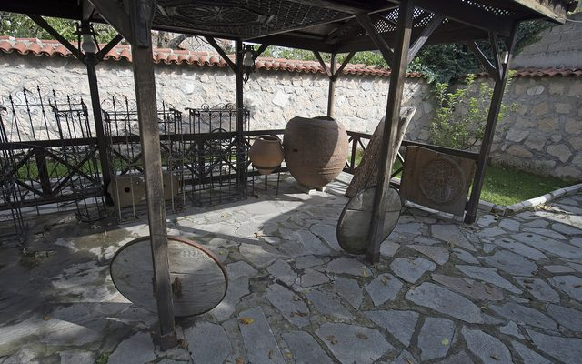
متحف بيت كوشوتكوتاهية · متحف خان الشرنقة (قوزا خان)بورصة · قلعة ومبنى تاريخيمتحف وموقع المقابر الملكيةغازي ماغوسا (فاماغوستا) · موقع أثري
خان الشرنقة (قوزا خان)بورصة · قلعة ومبنى تاريخيمتحف وموقع المقابر الملكيةغازي ماغوسا (فاماغوستا) · موقع أثري مدينة كريمنا الأثريةبوردور · موقع أثري
مدينة كريمنا الأثريةبوردور · موقع أثري قصر قباد آبادقونية · موقع أثري
قصر قباد آبادقونية · موقع أثري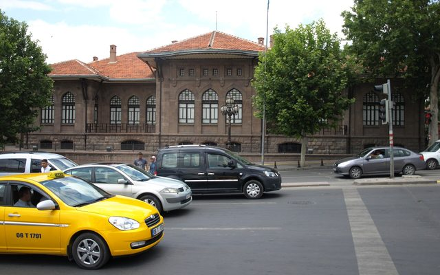
متحف حرب الاستقلالأنقرة · متحف متحف كوروكوبرو التذكاري وبيت أضنة التقليديأضنة · متحف
متحف كوروكوبرو التذكاري وبيت أضنة التقليديأضنة · متحف متنزه شلال كورشونلو الطبيعيأنطاليا · شلال
متنزه شلال كورشونلو الطبيعيأنطاليا · شلال متحف القوات الوطنيةباليكسير · متحف
متحف القوات الوطنيةباليكسير · متحف مدينة كيانيا الأثريةأنطاليا · موقع أثري
مدينة كيانيا الأثريةأنطاليا · موقع أثري مدينة كيمي الأثريةإزمير · موقع أثري
مدينة كيمي الأثريةإزمير · موقع أثري مدينة كيزيكوس الأثريةباليكسير · موقع أثري
مدينة كيزيكوس الأثريةباليكسير · موقع أثري متحف كاظم قره بكر باشاإسطنبول · متحف
متحف كاظم قره بكر باشاإسطنبول · متحف متنزه وادي كوبرولو الوطنيأنطاليا · وادٍ عميق (كانيون)
متنزه وادي كوبرولو الوطنيأنطاليا · وادٍ عميق (كانيون) جسر كوبرو بازار (أسبندوس)أنطاليا · قلعة ومبنى تاريخي
جسر كوبرو بازار (أسبندوس)أنطاليا · قلعة ومبنى تاريخي بحيرة كويجغيزموغلا · بحيرة
بحيرة كويجغيزموغلا · بحيرة موقع كول تبه الأثريقيصري · موقع أثري
موقع كول تبه الأثريقيصري · موقع أثري قلعة كوتاهياكوتاهية · قلعة ومبنى تاريخيمتحف كوتاهيةكوتاهية · متحف
قلعة كوتاهياكوتاهية · قلعة ومبنى تاريخيمتحف كوتاهيةكوتاهية · متحف كنيسة القديسة حنة (آيفاسيل الصغيرة)طرابزون · مبنى ديني
كنيسة القديسة حنة (آيفاسيل الصغيرة)طرابزون · مبنى ديني قصر كوتشوك صوإسطنبول · قلعة ومبنى تاريخي
قصر كوتشوك صوإسطنبول · قلعة ومبنى تاريخي متحف قرقلر ايليقرقلر ايلي · متحفمتحف قير شهرقير شهر · متحف
متحف قرقلر ايليقرقلر ايلي · متحفمتحف قير شهرقير شهر · متحف برج الفتاةإسطنبول · قلعة ومبنى تاريخي
برج الفتاةإسطنبول · قلعة ومبنى تاريخي البرج الأحمر (قيزيل قوله)أنطاليا · قلعة ومبنى تاريخي
البرج الأحمر (قيزيل قوله)أنطاليا · قلعة ومبنى تاريخي موقع لابراوندا الأثريموغلا · موقع أثري
موقع لابراوندا الأثريموغلا · موقع أثري موقع لاغينا الأثريموغلا · موقع أثري
موقع لاغينا الأثريموغلا · موقع أثري جامع لالا مصطفى باشاغازي ماغوسا (فاماغوستا) · مبنى دينيلامبوساغيرنه (كيرينيا) · موقع أثريلاموسأنطاليا · موقع أثري
جامع لالا مصطفى باشاغازي ماغوسا (فاماغوستا) · مبنى دينيلامبوساغيرنه (كيرينيا) · موقع أثريلاموسأنطاليا · موقع أثري موقع لاودكية الأثريدنيزلي · موقع أثري
موقع لاودكية الأثريدنيزلي · موقع أثري متحف المنحوتات الحجرية (اللابيداري)ليفكوشا (نيقوسيا) · متحف
متحف المنحوتات الحجرية (اللابيداري)ليفكوشا (نيقوسيا) · متحف بيت ذكرى قصر لطيفة هانمإزمير · متحف
بيت ذكرى قصر لطيفة هانمإزمير · متحف قصر لطيف أوغلوتوقات · متحف
قصر لطيف أوغلوتوقات · متحف ليبيدوسإزمير · موقع أثري
ليبيدوسإزمير · موقع أثري متحف الحضارات الليكية وموقع أندرياكي الأثريأنطاليا · موقع أثري
متحف الحضارات الليكية وموقع أندرياكي الأثريأنطاليا · موقع أثري الطريق الليكيموغلا · مسار مشي
الطريق الليكيموغلا · مسار مشي موقع ليميرا الأثريأنطاليا · موقع أثريمتحف قصر لواء باشا الإثنوغرافيقسطموني · متحف
موقع ليميرا الأثريأنطاليا · موقع أثريمتحف قصر لواء باشا الإثنوغرافيقسطموني · متحف قلعة لوريماموغلا · موقع أثري
قلعة لوريماموغلا · موقع أثري نصب لوزان ومحطة قره آغاجأدرنة · قلعة ومبنى تاريخي
نصب لوزان ومحطة قره آغاجأدرنة · قلعة ومبنى تاريخي متحف حجر الميرشوم (لوله طاش)إسكي شهر · متحفمتحف التعدينزونغولداق · متحف
متحف حجر الميرشوم (لوله طاش)إسكي شهر · متحفمتحف التعدينزونغولداق · متحف مدينة ماغارسوس الأثريةأضنة · موقع أثري
مدينة ماغارسوس الأثريةأضنة · موقع أثري موقع ماغنيسيا الأثريآيدن · موقع أثري
موقع ماغنيسيا الأثريآيدن · موقع أثري جامع محمود بكقسطموني · مبنى ديني
جامع محمود بكقسطموني · مبنى ديني جسر ملاباديديار بكر · قلعة ومبنى تاريخيمتحف بيت أتاتورك التذكاري والإثنوغرافيا في ملطيةملطية · متحف
جسر ملاباديديار بكر · قلعة ومبنى تاريخيمتحف بيت أتاتورك التذكاري والإثنوغرافيا في ملطيةملطية · متحف متحف ملطيةملطية · متحفمتحف ملازكردموش · متحف
متحف ملطيةملطية · متحفمتحف ملازكردموش · متحف قلعة مامورةمرسين · قلعة ومبنى تاريخي
قلعة مامورةمرسين · قلعة ومبنى تاريخي شلال مانافغاتأنطاليا · شلال
شلال مانافغاتأنطاليا · شلال متحف آق حصار ومقبرة تبه في مانيسامانيسا · موقع أثري
متحف آق حصار ومقبرة تبه في مانيسامانيسا · موقع أثري متحف مانيسامانيسا · متحف
متحف مانيسامانيسا · متحف متحف ماردينماردين · متحفمتحف مرمريسموغلا · متحف
متحف ماردينماردين · متحفمتحف مرمريسموغلا · متحف أكشاك مسلكإسطنبول · قلعة ومبنى تاريخي
أكشاك مسلكإسطنبول · قلعة ومبنى تاريخي متحف البراءةإسطنبول · متحفمدينة مازي تحت الأرضنوشهر · مدينة تحت الأرض
متحف البراءةإسطنبول · متحفمدينة مازي تحت الأرضنوشهر · مدينة تحت الأرض ماشات هويوكتوقات · موقع أثريمتحف ومكتبة محمد عاكف أرصوي للأدبأنقرة · متحف
ماشات هويوكتوقات · موقع أثريمتحف ومكتبة محمد عاكف أرصوي للأدبأنقرة · متحف بيت محمد عاكف أرصوي التذكاريإسطنبول · متحفمتحف محمد جابر ألبر الأثريباطمان · متحف
بيت محمد عاكف أرصوي التذكاريإسطنبول · متحفمتحف محمد جابر ألبر الأثريباطمان · متحف بحيرة ميكهقونية · بحيرة
بحيرة ميكهقونية · بحيرة جدول ملندوزجه · التجديف في المياه السريعة
جدول ملندوزجه · التجديف في المياه السريعة جسر مريتش (جسر المجيدية)أدرنة · قلعة ومبنى تاريخي
جسر مريتش (جسر المجيدية)أدرنة · قلعة ومبنى تاريخي متحف بيت أتاتورك في مرسينمرسين · متحف
متحف بيت أتاتورك في مرسينمرسين · متحف قلعة الفتاة في مرسين (قيز قلعة)مرسين · قلعة ومبنى تاريخي
قلعة الفتاة في مرسين (قيز قلعة)مرسين · قلعة ومبنى تاريخي متحف مرسينمرسين · متحفمتحف طرسوسمرسين · متحف
متحف مرسينمرسين · متحفمتحف طرسوسمرسين · متحف بيت السيدة مريمإزمير · مبنى ديني
بيت السيدة مريمإزمير · مبنى ديني دير السيدة مريمغيرسون · مبنى ديني
دير السيدة مريمغيرسون · مبنى ديني موقع ميتروبوليس الأثريإزمير · موقع أثري
موقع ميتروبوليس الأثريإزمير · موقع أثري متحف مولاناقونية · متحف
متحف مولاناقونية · متحف متحف التكية المولويةليفكوشا (نيقوسيا) · متحفمتحف التكية المولويةأنطاليا · متحف
متحف التكية المولويةليفكوشا (نيقوسيا) · متحفمتحف التكية المولويةأنطاليا · متحف مزغيت قلعةمرسين · موقع أثري
مزغيت قلعةمرسين · موقع أثري باب مهروان · موقع أثري
باب مهروان · موقع أثري موقع مدينة ميداس الأثري (يازيلي قايا)إسكي شهر · موقع أثري
موقع مدينة ميداس الأثري (يازيلي قايا)إسكي شهر · موقع أثري جامع مهرماه سلطان (أدرنة قابي)إسطنبول · مبنى ديني
جامع مهرماه سلطان (أدرنة قابي)إسطنبول · مبنى ديني قلعة وموقع بيتشين الأثري في ميلاسموغلا · موقع أثري
قلعة وموقع بيتشين الأثري في ميلاسموغلا · موقع أثري موقع يوروموس الأثري في ميلاسموغلا · موقع أثريمتحف الأعمال الحجرية في ميلاسموغلا · متحفضريح هيكاتومنوس (أوزون يوفا)موغلا · موقع أثري
موقع يوروموس الأثري في ميلاسموغلا · موقع أثريمتحف الأعمال الحجرية في ميلاسموغلا · متحفضريح هيكاتومنوس (أوزون يوفا)موغلا · موقع أثري مجمع ضريح أوزونيوفا والمتحف (ميلاس)موغلا · موقع أثري
مجمع ضريح أوزونيوفا والمتحف (ميلاس)موغلا · موقع أثري متحف سوق السمك في ياسوس (ميلاس)موغلا · متحف
متحف سوق السمك في ياسوس (ميلاس)موغلا · متحف متحف ميليتوسآيدن · متحف
متحف ميليتوسآيدن · متحف موقع ميليتوس الأثريآيدن · موقع أثري
موقع ميليتوس الأثريآيدن · موقع أثري متحف المعمار سنان والمدينةقيصري · متحف
متحف المعمار سنان والمدينةقيصري · متحف ميني توركإسطنبول · متحف
ميني توركإسطنبول · متحف المصيصة (موبسويستيا)أضنة · موقع أثري
المصيصة (موبسويستيا)أضنة · موقع أثري متحف فسيفساء المصيصةأضنة · متحف
متحف فسيفساء المصيصةأضنة · متحف متحف الصناعة والتكنولوجيا MKEأنقرة · متحف
متحف الصناعة والتكنولوجيا MKEأنقرة · متحف دير مار كبرئيلماردين · مبنى دينيمتحف شهوار للتاريخ الطبيعي (MTA)أنقرة · متحفمدينة موجور تحت الأرضقير شهر · مدينة تحت الأرض
دير مار كبرئيلماردين · مبنى دينيمتحف شهوار للتاريخ الطبيعي (MTA)أنقرة · متحفمدينة موجور تحت الأرضقير شهر · مدينة تحت الأرض متحف بيت هدنة مودانيابورصة · متحف
متحف بيت هدنة مودانيابورصة · متحف مجمع المراديةبورصة · مبنى ديني
مجمع المراديةبورصة · مبنى ديني شلال مراديةوان · شلال
شلال مراديةوان · شلال مصطفى باشا (سيناسوس)نوشهر · قلعة ومبنى تاريخي
مصطفى باشا (سيناسوس)نوشهر · قلعة ومبنى تاريخي متحف ضريح موسولوس التذكاري في بودرومموغلا · متحف
متحف ضريح موسولوس التذكاري في بودرومموغلا · متحف موقع كنيدوس الأثريموغلا · موقع أثري
موقع كنيدوس الأثريموغلا · موقع أثري متحف موغلاموغلا · متحفمتحف موشموش · متحف
متحف موغلاموغلا · متحفمتحف موشموش · متحف مدينة ميندوس الأثريةموغلا · موقع أثري
مدينة ميندوس الأثريةموغلا · موقع أثري موقع ميرا الأثريأنطاليا · موقع أثري
موقع ميرا الأثريأنطاليا · موقع أثري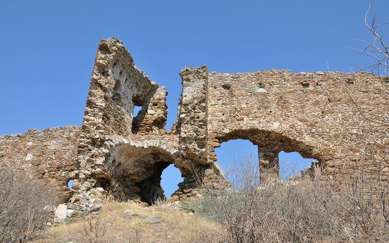
مدينة ميوس الأثريةآيدن · موقع أثري متحف غازهانةإسطنبول · متحفناكوليا ومجمع سيد غازيإسكي شهر · مبنى ديني
متحف غازهانةإسطنبول · متحفناكوليا ومجمع سيد غازيإسكي شهر · مبنى ديني متحف تحصين نماز كاهجناق قلعة · متحف
متحف تحصين نماز كاهجناق قلعة · متحف قلعة نمرونمرسين · قلعة ومبنى تاريخيمتحف منزل نامق كمالتكيرداغ · متحف
قلعة نمرونمرسين · قلعة ومبنى تاريخيمتحف منزل نامق كمالتكيرداغ · متحف زنزانة ومتحف نامق كمالغازي ماغوسا (فاماغوستا) · متحفنياندرياجناق قلعة · موقع أثري
زنزانة ومتحف نامق كمالغازي ماغوسا (فاماغوستا) · متحفنياندرياجناق قلعة · موقع أثري متحف بيت نجمي إيغه الإثنوغرافيأدرنة · متحف
متحف بيت نجمي إيغه الإثنوغرافيأدرنة · متحف بحيرة فوهة نمرودبدليس · بحيرةمتحف حاجي بكتاش للآثار والإثنوغرافيانوشهر · متحفبيت أتاتورك المتحف في حاجي بكتاشنوشهر · متحف
بحيرة فوهة نمرودبدليس · بحيرةمتحف حاجي بكتاش للآثار والإثنوغرافيانوشهر · متحفبيت أتاتورك المتحف في حاجي بكتاشنوشهر · متحف متحف نوشهيرنوشهر · متحفعمارة نيلوفر خاتون (متحف الآثار التركية والإسلامية)بورصة · متحفموقع أنداوال الأثري (نيغده)نيغدة · موقع أثري
متحف نوشهيرنوشهر · متحفعمارة نيلوفر خاتون (متحف الآثار التركية والإسلامية)بورصة · متحفموقع أنداوال الأثري (نيغده)نيغدة · موقع أثري متحف نيغدهنيغدة · متحف
متحف نيغدهنيغدة · متحف مدينة نوتيون الأثريةإزمير · موقع أثري
مدينة نوتيون الأثريةإزمير · موقع أثري قصر نيمفايون (نيف)إزمير · قلعة ومبنى تاريخي
قصر نيمفايون (نيف)إزمير · قلعة ومبنى تاريخي موقع نيسا الأثري (سلطان حصار)آيدن · موقع أثري
موقع نيسا الأثري (سلطان حصار)آيدن · موقع أثري متحف العلوم والتكنولوجيا في جامعة الشرق الأوسط التقنيةأنقرة · متحف
متحف العلوم والتكنولوجيا في جامعة الشرق الأوسط التقنيةأنقرة · متحف متحف أودون بازاري الحديثإسكي شهر · متحف
متحف أودون بازاري الحديثإسكي شهر · متحف مدينة أوينواندا الأثريةموغلا · موقع أثري
مدينة أوينواندا الأثريةموغلا · موقع أثري مدينة أولبا الأثريةمرسين · موقع أثري
مدينة أولبا الأثريةمرسين · موقع أثري أولوز هويوكأماسيا · موقع أثري
أولوز هويوكأماسيا · موقع أثري موقع أوليمبوس الأثريأنطاليا · موقع أثري
موقع أوليمبوس الأثريأنطاليا · موقع أثري جسر العيون العشر (جسر دجلة)ديار بكر · قلعة ومبنى تاريخيمتحف أوردوأوردو · متحف
جسر العيون العشر (جسر دجلة)ديار بكر · قلعة ومبنى تاريخيمتحف أوردوأوردو · متحف متحف أورهان كمالإسطنبول · متحف
متحف أورهان كمالإسطنبول · متحف متحف عثمان حمدي بكقوجه ايلي · متحفمتحف عثمانيةعثمانية · متحفمتحف البيت العثمانيبورصة · متحف
متحف عثمان حمدي بكقوجه ايلي · متحفمتحف عثمانيةعثمانية · متحفمتحف البيت العثمانيبورصة · متحف قلعة عطيلغازي ماغوسا (فاماغوستا) · قلعة ومبنى تاريخي
قلعة عطيلغازي ماغوسا (فاماغوستا) · قلعة ومبنى تاريخي أويلوم هويوككلس · موقع أثري
أويلوم هويوككلس · موقع أثري منتجع بالاندوكن للتزلجأرضروم · منتجع تزلج
منتجع بالاندوكن للتزلجأرضروم · منتجع تزلج متحف بانوراما 1453إسطنبول · متحف
متحف بانوراما 1453إسطنبول · متحف مدينة باريون الأثريةجناق قلعة · موقع أثري
مدينة باريون الأثريةجناق قلعة · موقع أثري موقع باتارا الأثريأنطاليا · موقع أثري
موقع باتارا الأثريأنطاليا · موقع أثري مدينة بيداسا الأثريةموغلا · موقع أثريبيدنيليسوسأنطاليا · موقع أثري
مدينة بيداسا الأثريةموغلا · موقع أثريبيدنيليسوسأنطاليا · موقع أثري متحف بيراإسطنبول · متحف
متحف بيراإسطنبول · متحف موقع بيرغه الأثريأنطاليا · موقع أثريبيربيرينيباليكسير · موقع أثري
موقع بيرغه الأثريأنطاليا · موقع أثريبيربيرينيباليكسير · موقع أثري موقع بيري الأثريأديامان · موقع أثري
موقع بيري الأثريأديامان · موقع أثري موقع بيسينوس الأثريإسكي شهر · موقع أثري
موقع بيسينوس الأثريإسكي شهر · موقع أثري موقع فاسيليس الأثريأنطاليا · موقع أثري
موقع فاسيليس الأثريأنطاليا · موقع أثري مدينة فيلوس الأثريةأنطاليا · موقع أثري
مدينة فيلوس الأثريةأنطاليا · موقع أثري فوكايا (فوتشا)إزمير · موقع أثري
فوكايا (فوتشا)إزمير · موقع أثري متحف بيير لوتيإسطنبول · متحف
متحف بيير لوتيإسطنبول · متحف أنطاكية بيسيدياإسبرطة · موقع أثريمدينة بومبيوبوليس (بافلاغونيا)قسطموني · موقع أثري
أنطاكية بيسيدياإسبرطة · موقع أثريمدينة بومبيوبوليس (بافلاغونيا)قسطموني · موقع أثري موقع برييني الأثريآيدن · موقع أثري
موقع برييني الأثريآيدن · موقع أثري بروسياس عند هيبيوس (قونور ألب)دوزجه · موقع أثري
بروسياس عند هيبيوس (قونور ألب)دوزجه · موقع أثري بيدنايموغلا · موقع أثري
بيدنايموغلا · موقع أثري متحف رحمي م. كوتشإسطنبول · متحف
متحف رحمي م. كوتشإسطنبول · متحف ثكنة رامي (مكتبة رامي)إسطنبول · قلعة ومبنى تاريخي
ثكنة رامي (مكتبة رامي)إسطنبول · قلعة ومبنى تاريخي متحف الرسم والنحتأنقرة · متحف
متحف الرسم والنحتأنقرة · متحف متحف رزان هاسإسطنبول · متحف
متحف رزان هاسإسطنبول · متحف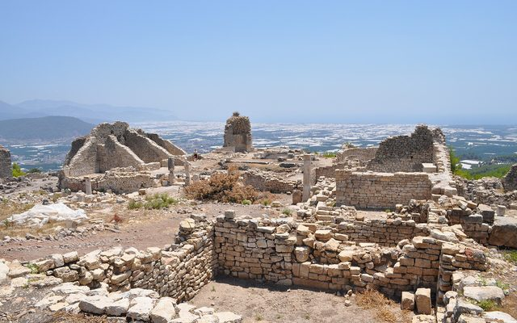
مدينة روديابوليس الأثريةأنطاليا · موقع أثري بيت أتاتورك المتحف في ريزهريزه · متحف
بيت أتاتورك المتحف في ريزهريزه · متحف متحف ريزهريزه · متحف
متحف ريزهريزه · متحف الحمامات الرومانية في أنقرةأنقرة · موقع أثري
الحمامات الرومانية في أنقرةأنقرة · موقع أثري قلعة روملي حصارإسطنبول · قلعة ومبنى تاريخي
قلعة روملي حصارإسطنبول · قلعة ومبنى تاريخي موقع قلعة الروم الأثريغازي عنتاب · موقع أثري
موقع قلعة الروم الأثريغازي عنتاب · موقع أثري جامع رستم باشاإسطنبول · مبنى ديني
جامع رستم باشاإسطنبول · مبنى ديني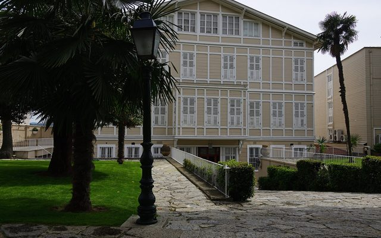
متحف صادبرك هانمإسطنبول · متحف موقع ساغالاسوس الأثريبوردور · موقع أثري
موقع ساغالاسوس الأثريبوردور · موقع أثري مدرسة الصاحبيةقيصري · مبنى ديني
مدرسة الصاحبيةقيصري · مبنى ديني متحف سعيد فائق أباسيانيقإسطنبول · متحف
متحف سعيد فائق أباسيانيقإسطنبول · متحف متحف سكارياسكاريا · متحف
متحف سكارياسكاريا · متحف وادي ساكلي كنتموغلا · وادٍ عميق (كانيون)
وادي ساكلي كنتموغلا · وادٍ عميق (كانيون) متحف مدينة ماردين صاقب صابانجيماردين · متحف
متحف مدينة ماردين صاقب صابانجيماردين · متحف متحف صاقب صبانجيإسطنبول · متحف
متحف صاقب صبانجيإسطنبول · متحف موقع سلاميس الأثريغازي ماغوسا (فاماغوستا) · موقع أثري
موقع سلاميس الأثريغازي ماغوسا (فاماغوستا) · موقع أثري بحيرة سالدابوردور · بحيرة
بحيرة سالدابوردور · بحيرة سالت غلطةإسطنبول · متحف
سالت غلطةإسطنبول · متحف متحف سامسونسامسون · متحف
متحف سامسونسامسون · متحف بحيرة صبنجةسكاريا · بحيرة
بحيرة صبنجةسكاريا · بحيرة مدينة صاراتلي قرق غوز تحت الأرضآق سراي · مدينة تحت الأرض
مدينة صاراتلي قرق غوز تحت الأرضآق سراي · مدينة تحت الأرض موقع سارديس الأثريمانيسا · موقع أثري
موقع سارديس الأثريمانيسا · موقع أثري ساريسا (كوشاقلي)سيواس · موقع أثري
ساريسا (كوشاقلي)سيواس · موقع أثري صاري خاننوشهر · قلعة ومبنى تاريخي
صاري خاننوشهر · قلعة ومبنى تاريخي منتجع صاري قاميش للتزلجقارص · منتجع تزلج
منتجع صاري قاميش للتزلجقارص · منتجع تزلج حمّام صاري قايا الرومانييوزغات · موقع أثري
حمّام صاري قايا الرومانييوزغات · موقع أثري ساتالاغوموشهانه · موقع أثريسيباستوبوليستوقات · موقع أثري
ساتالاغوموشهانه · موقع أثريسيباستوبوليستوقات · موقع أثري سيبيداأنطاليا · موقع أثري
سيبيداأنطاليا · موقع أثري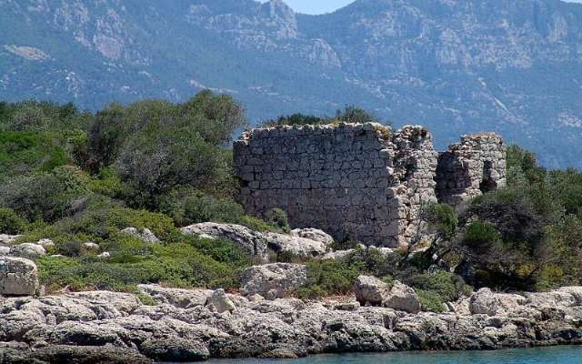
جزيرة سيدير (كيدرياي)موغلا · موقع أثري متحف الورق «سيكا»قوجه ايلي · متحف
متحف الورق «سيكا»قوجه ايلي · متحف سلوقية بامفيلياأنطاليا · موقع أثري
سلوقية بامفيلياأنطاليا · موقع أثري مدينة سيلغه الأثريةأنطاليا · موقع أثري
مدينة سيلغه الأثريةأنطاليا · موقع أثري جامع السليميةليفكوشا (نيقوسيا) · مبنى ديني
جامع السليميةليفكوشا (نيقوسيا) · مبنى ديني مدينة سيلينوس الأثريةأنطاليا · موقع أثري
مدينة سيلينوس الأثريةأنطاليا · موقع أثري متحف سيدهأنطاليا · متحف
متحف سيدهأنطاليا · متحف موقع سيده الأثريأنطاليا · موقع أثري
موقع سيده الأثريأنطاليا · موقع أثري مدينة سيديما الأثريةموغلا · موقع أثري
مدينة سيديما الأثريةموغلا · موقع أثري الجامع الكبير في سعرتسعرت · مبنى ديني
الجامع الكبير في سعرتسعرت · مبنى ديني كهف أستيم في سيليفكهمرسين · موقع طبيعي
كهف أستيم في سيليفكهمرسين · موقع طبيعي متحف بيت أتاتورك والإثنوغرافيا في سيليفكهمرسين · متحف
متحف بيت أتاتورك والإثنوغرافيا في سيليفكهمرسين · متحف موقع آيا تكلا الأثري في سيليفكهمرسين · موقع أثري
موقع آيا تكلا الأثري في سيليفكهمرسين · موقع أثري حفرتا الجنة والجحيم في سيليفكهمرسين · موقع طبيعي
حفرتا الجنة والجحيم في سيليفكهمرسين · موقع طبيعي قلعة سيليفكهمرسين · قلعة ومبنى تاريخي
قلعة سيليفكهمرسين · قلعة ومبنى تاريخي متحف سيليفكهمرسين · متحف
متحف سيليفكهمرسين · متحف متحف نارلي كويو للفسيفساء في سيليفكهمرسين · متحف
متحف نارلي كويو للفسيفساء في سيليفكهمرسين · متحف سيله وكنيسة القديسة هيلانةقونية · مبنى ديني
سيله وكنيسة القديسة هيلانةقونية · مبنى ديني مدينة سيليون الأثريةأنطاليا · موقع أثريمتحف بيت أتاتورك في سلوانديار بكر · متحف
مدينة سيليون الأثريةأنطاليا · موقع أثريمتحف بيت أتاتورك في سلوانديار بكر · متحف موقع سيمينا الأثريأنطاليا · موقع أثريمتحف أرسلان تورونلار الإثنوغرافي في سينوبسينوب · متحف
موقع سيمينا الأثريأنطاليا · موقع أثريمتحف أرسلان تورونلار الإثنوغرافي في سينوبسينوب · متحف متحف سينوبسينوب · متحف
متحف سينوبسينوب · متحف سيركيلي هويوكأضنة · موقع أثري
سيركيلي هويوكأضنة · موقع أثري متحف سيواس الأثريسيواس · متحف
متحف سيواس الأثريسيواس · متحف متحف أتاتورك والمؤتمر في سيواسسيواس · متحف
متحف أتاتورك والمؤتمر في سيواسسيواس · متحف مدينة سوبيسوس الأثريةنوشهر · موقع أثريموقع سوبيسوس الأثرينوشهر · موقع أثريضريح صوفراز التذكاريأديامان · موقع أثري
مدينة سوبيسوس الأثريةنوشهر · موقع أثريموقع سوبيسوس الأثرينوشهر · موقع أثريضريح صوفراز التذكاريأديامان · موقع أثري قلعة صوفتامرسين · قلعة ومبنى تاريخي
قلعة صوفتامرسين · قلعة ومبنى تاريخي سولي بومبيوبوليسمرسين · موقع أثري
سولي بومبيوبوليسمرسين · موقع أثري موقع سولي الأثريليفكه (ليفكا) · موقع أثري
موقع سولي الأثريليفكه (ليفكا) · موقع أثري سوغماتارشانلي أورفا · موقع أثري
سوغماتارشانلي أورفا · موقع أثري كنيسة القديس أنطونيوس البادويإسطنبول · مبنى ديني
كنيسة القديس أنطونيوس البادويإسطنبول · مبنى ديني دير القديس برناباغازي ماغوسا (فاماغوستا) · مبنى ديني
دير القديس برناباغازي ماغوسا (فاماغوستا) · مبنى ديني قلعة القديس هيلاريونغيرنه (كيرينيا) · قلعة ومبنى تاريخي
قلعة القديس هيلاريونغيرنه (كيرينيا) · قلعة ومبنى تاريخي متحف القديس بطرس التذكاريهاتاي · متحف
متحف القديس بطرس التذكاريهاتاي · متحف دير القديس سمعانهاتاي · مبنى ديني
دير القديس سمعانهاتاي · مبنى ديني موقع ستراتونيكيا الأثريموغلا · موقع أثري
موقع ستراتونيكيا الأثريموغلا · موقع أثري متحف الصحة في مجمع السلطان بايزيد الثانيأدرنة · متحف
متحف الصحة في مجمع السلطان بايزيد الثانيأدرنة · متحف جامع السلطان أحمد (الجامع الأزرق)إسطنبول · مبنى ديني
جامع السلطان أحمد (الجامع الأزرق)إسطنبول · مبنى ديني ساحة السلطان أحمد (ميدان سباق الخيل)إسطنبول · موقع أثري
ساحة السلطان أحمد (ميدان سباق الخيل)إسطنبول · موقع أثري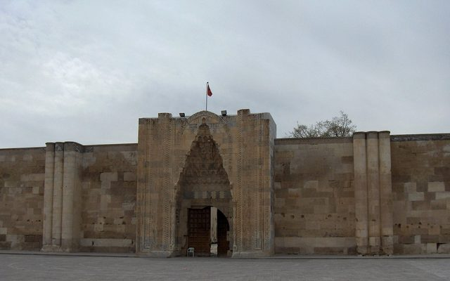
خان السلطان (سلطان خاني)آق سراي · قلعة ومبنى تاريخيطريق السلاطينأدرنة · مسار مشي مدينة سورا الأثريةأنطاليا · موقع أثري
مدينة سورا الأثريةأنطاليا · موقع أثري كنيسة سورب كيراكوس الأرمنيةديار بكر · مبنى ديني
كنيسة سورب كيراكوس الأرمنيةديار بكر · مبنى ديني شلال سو أوچتوبورصة · شلال
شلال سو أوچتوبورصة · شلال متحف أرطغرل غازي في سوغوتبيله جك · متحف
متحف أرطغرل غازي في سوغوتبيله جك · متحف جامع السليمانيةإسطنبول · مبنى ديني
جامع السليمانيةإسطنبول · مبنى ديني دير سوميلاطرابزون · مبنى دينيمتحف تختاقوشلار الإثنوغرافيباليكسير · متحفمتحف تاكسيارخيس التذكاريباليكسير · متحف
دير سوميلاطرابزون · مبنى دينيمتحف تختاقوشلار الإثنوغرافيباليكسير · متحفمتحف تاكسيارخيس التذكاريباليكسير · متحف تابوريليمرسين · موقع أثري
تابوريليمرسين · موقع أثري سجن سينوب التاريخيسينوب · قلعة ومبنى تاريخي
سجن سينوب التاريخيسينوب · قلعة ومبنى تاريخي الطريق الروماني في طرسوسمرسين · موقع أثري
الطريق الروماني في طرسوسمرسين · موقع أثري غوزلوكوله في طرسوسمرسين · موقع أثري
غوزلوكوله في طرسوسمرسين · موقع أثري بوابة كليوباترا والطريق القديم في طرسوسمرسين · موقع أثري
بوابة كليوباترا والطريق القديم في طرسوسمرسين · موقع أثري متحف القديس بولس التذكاري في طرسوسمرسين · متحف
متحف القديس بولس التذكاري في طرسوسمرسين · متحف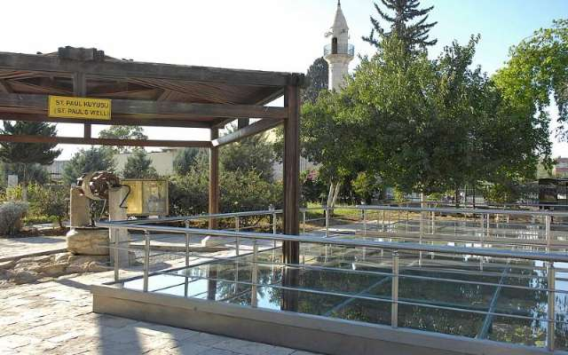
بئر القديس بولس في طرسوسمرسين · مبنى ديني مدينة تاتلارين تحت الأرضنوشهر · مدينة تحت الأرضمتحف الآلات الكاتبة تايفون طالب أوغلوإسكي شهر · متحف
مدينة تاتلارين تحت الأرضنوشهر · مدينة تحت الأرضمتحف الآلات الكاتبة تايفون طالب أوغلوإسكي شهر · متحف وادي تازيأنطاليا · وادٍ عميق (كانيون)
وادي تازيأنطاليا · وادٍ عميق (كانيون) الجسر الحجري (طاش كوبري)أضنة · قلعة ومبنى تاريخي
الجسر الحجري (طاش كوبري)أضنة · قلعة ومبنى تاريخي متحف أرسلان إيجه للأمفوراتمرسين · متحف
متحف أرسلان إيجه للأمفوراتمرسين · متحف بيت أتاتورك في طاشوجومرسين · متحف
بيت أتاتورك في طاشوجومرسين · متحف متحف القاطرات البخارية المفتوح التابع للسكك الحديدية التركيةأنقرة · متحف
متحف القاطرات البخارية المفتوح التابع للسكك الحديدية التركيةأنقرة · متحف متحف محطة قطار ماليكويأنقرة · متحف
متحف محطة قطار ماليكويأنقرة · متحف مدينة تيميوسا الأثريةأنطاليا · موقع أثريبيت أتاتورك المتحف في مراتلي (تكيرداغ)تكيرداغ · متحف
مدينة تيميوسا الأثريةأنطاليا · موقع أثريبيت أتاتورك المتحف في مراتلي (تكيرداغ)تكيرداغ · متحف متحف تكيرداغتكيرداغ · متحف
متحف تكيرداغتكيرداغ · متحف كهوف تكه كويسامسون · موقع أثري
كهوف تكه كويسامسون · موقع أثري موقع تيوس الأثريإزمير · موقع أثري
موقع تيوس الأثريإزمير · موقع أثري موقع ترميسوس الأثريأنطاليا · موقع أثري
موقع ترميسوس الأثريأنطاليا · موقع أثري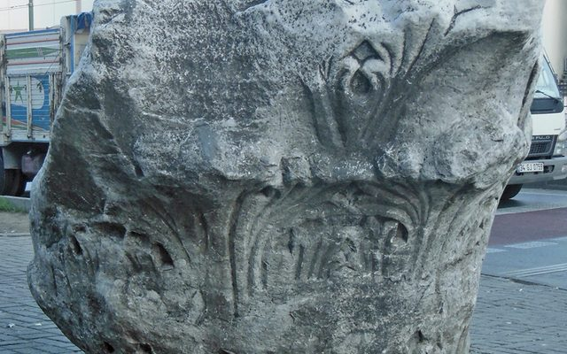
ساحة ثيودوسيوسإسطنبول · موقع أثري أسوار ثيودوسيوسإسطنبول · قلعة ومبنى تاريخيقلعة تل باشرغازي عنتاب · قلعة ومبنى تاريخي
أسوار ثيودوسيوسإسطنبول · قلعة ومبنى تاريخيقلعة تل باشرغازي عنتاب · قلعة ومبنى تاريخي تيلمن هويوكغازي عنتاب · موقع أثري
تيلمن هويوكغازي عنتاب · موقع أثري متحف تيرهإزمير · متحف
متحف تيرهإزمير · متحف نفق تيتوس (فسبازيان)هاتاي · موقع أثري
نفق تيتوس (فسبازيان)هاتاي · موقع أثري متحف توفاش للعربات الأناضوليةبورصة · متحفبيت أتاتورك والمتحف الإثنوغرافي في توقاتتوقات · متحف
متحف توفاش للعربات الأناضوليةبورصة · متحفبيت أتاتورك والمتحف الإثنوغرافي في توقاتتوقات · متحف متحف توقاتتوقات · متحف
متحف توقاتتوقات · متحف خان طاش في توقات (خان الفويفودا)توقات · قلعة ومبنى تاريخي
خان طاش في توقات (خان الفويفودا)توقات · قلعة ومبنى تاريخي قصر طوب قابيإسطنبول · قلعة ومبنى تاريخي
قصر طوب قابيإسطنبول · قلعة ومبنى تاريخي شلال تورتومأرضروم · شلال
شلال تورتومأرضروم · شلال كشك أتاتورك في طرابزونطرابزون · متحف
كشك أتاتورك في طرابزونطرابزون · متحف آيا صوفيا طرابزونطرابزون · مبنى ديني
آيا صوفيا طرابزونطرابزون · مبنى ديني متحف طرابزون (قصر كوستاكي)طرابزون · متحف
متحف طرابزون (قصر كوستاكي)طرابزون · متحف مدينة ترالليس الأثريةآيدن · موقع أثري
مدينة ترالليس الأثريةآيدن · موقع أثري تريبيناأنطاليا · موقع أثري
تريبيناأنطاليا · موقع أثري متحف طروادةجناق قلعة · متحف
متحف طروادةجناق قلعة · متحف تريساأنطاليا · موقع أثري
تريساأنطاليا · موقع أثري متحف تونجليتونجلي · متحف
متحف تونجليتونجلي · متحف بحيرة الملح (توز غولو)آق سراي · بحيرة
بحيرة الملح (توز غولو)آق سراي · بحيرة تيانا والحوض الروماني في كمرحصارنيغدة · موقع أثري
تيانا والحوض الروماني في كمرحصارنيغدة · موقع أثري تيبيريسوسأنطاليا · موقع أثري
تيبيريسوسأنطاليا · موقع أثري متحف الجمعية التركية للطيرانأنقرة · متحف
متحف الجمعية التركية للطيرانأنقرة · متحف متحف فنون الخط للأوقاف التركيةإسطنبول · متحف
متحف فنون الخط للأوقاف التركيةإسطنبول · متحف متحف الآثار التركية والإسلاميةإسطنبول · متحفمتحف الآثار التركية والإسلامية في أدرنةأدرنة · متحف
متحف الآثار التركية والإسلاميةإسطنبول · متحفمتحف الآثار التركية والإسلامية في أدرنةأدرنة · متحف متحف الآثار التركية الإسلامية والإثنوغرافياأرضروم · متحف
متحف الآثار التركية الإسلامية والإثنوغرافياأرضروم · متحف متحف بنك إشإسطنبول · متحف
متحف بنك إشإسطنبول · متحف متنزه وادي أولوبي الطبيعيعشاق · وادٍ عميق (كانيون)متحف أولوبورلوإسبرطة · متحف
متنزه وادي أولوبي الطبيعيعشاق · وادٍ عميق (كانيون)متحف أولوبورلوإسبرطة · متحف متحف سجن أولوجانلارأنقرة · متحف
متحف سجن أولوجانلارأنقرة · متحف منتجع أولوداغ للتزلجبورصة · منتجع تزلج
منتجع أولوداغ للتزلجبورصة · منتجع تزلج موقع أوزونجه بورج الأثريمرسين · موقع أثري
موقع أوزونجه بورج الأثريمرسين · موقع أثري أوزون غولطرابزون · بحيرة
أوزون غولطرابزون · بحيرة متحف أوشاكعشاق · متحف
متحف أوشاكعشاق · متحف وادي فالاقسطموني · وادٍ عميق (كانيون)
وادي فالاقسطموني · وادٍ عميق (كانيون) بحيرة وانوان · بحيرة
بحيرة وانوان · بحيرة قلعة وانوان · قلعة ومبنى تاريخي
قلعة وانوان · قلعة ومبنى تاريخي متحف وانوان · متحف
متحف وانوان · متحف جسر فارداأضنة · قلعة ومبنى تاريخيآيا صوفيا فيزه (جامع غازي سليمان باشا)قرقلر ايلي · مبنى ديني
جسر فارداأضنة · قلعة ومبنى تاريخيآيا صوفيا فيزه (جامع غازي سليمان باشا)قرقلر ايلي · مبنى ديني قصر فونيليفكه (ليفكا) · موقع أثري
قصر فونيليفكه (ليفكا) · موقع أثري متحف يحيى كمالإسطنبول · متحف
متحف يحيى كمالإسطنبول · متحف متحف يالواجإسبرطة · متحف
متحف يالواجإسبرطة · متحف ياناطاش (الخيمرا)أنطاليا · موقع طبيعي
ياناطاش (الخيمرا)أنطاليا · موقع طبيعي يانق خانمرسين · موقع أثري
يانق خانمرسين · موقع أثري متنزه يدي غوللر الوطنيبولو · بحيرة
متنزه يدي غوللر الوطنيبولو · بحيرة قلعة يدي قولهإسطنبول · قلعة ومبنى تاريخي
قلعة يدي قولهإسطنبول · قلعة ومبنى تاريخي متحف بيت شماكي في يني شهربورصة · متحف
متحف بيت شماكي في يني شهربورصة · متحف صهريج البازيليك (يرَبطان)إسطنبول · قلعة ومبنى تاريخي
صهريج البازيليك (يرَبطان)إسطنبول · قلعة ومبنى تاريخي موقع يسمك الأثريغازي عنتاب · موقع أثري
موقع يسمك الأثريغازي عنتاب · موقع أثري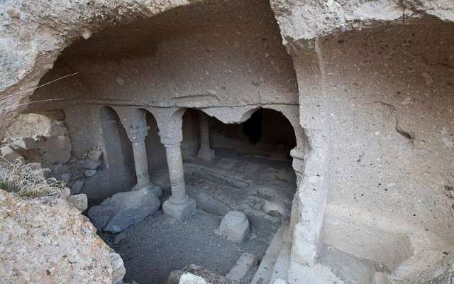
موقع وادي سوغانلي في يشيل حصارقيصري · موقع أثري تل يشيل أوفاإزمير · موقع أثري
تل يشيل أوفاإزمير · موقع أثري المئذنة المضلعة (يفلي منارة)أنطاليا · مبنى ديني
المئذنة المضلعة (يفلي منارة)أنطاليا · مبنى ديني متحف يوزغاتيوزغات · متحف
متحف يوزغاتيوزغات · متحف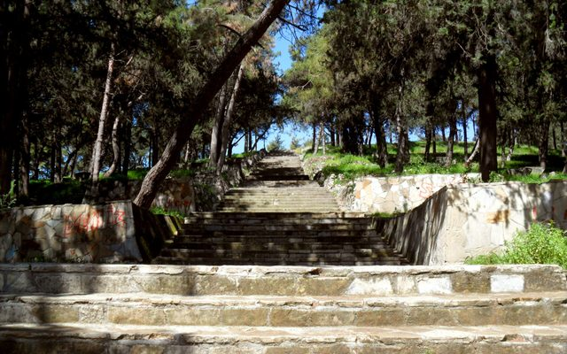
تل يوموك تبهمرسين · موقع أثري متحف بيت يوروك علي أفهآيدن · متحف
متحف بيت يوروك علي أفهآيدن · متحف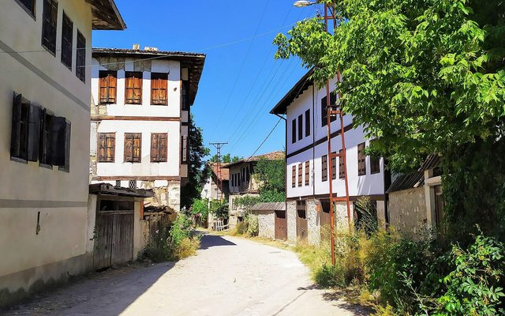
قرية يوروككارابوك · قلعة ومبنى تاريخي القصر الماشي في يالوفايالوفا · متحف
القصر الماشي في يالوفايالوفا · متحف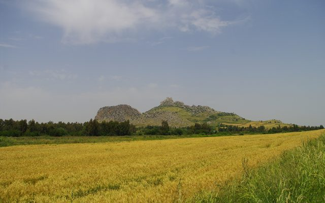
قلعة الحية (يلان قلعة)أضنة · قلعة ومبنى تاريخي مصنع يلدز للخزف والبورسلينإسطنبول · متحف
مصنع يلدز للخزف والبورسلينإسطنبول · متحف قصر يلدزإسطنبول · قلعة ومبنى تاريخي
قصر يلدزإسطنبول · قلعة ومبنى تاريخي متحف يلماز بيوك أرشن للتماثيل الشمعيةإسكي شهر · متحف
متحف يلماز بيوك أرشن للتماثيل الشمعيةإسكي شهر · متحف متحف النصرأفيون قره حصار · متحف
متحف النصرأفيون قره حصار · متحف نهر زامانتيأضنة · التجديف في المياه السريعة
نهر زامانتيأضنة · التجديف في المياه السريعة خان زازادينقونية · قلعة ومبنى تاريخي
خان زازادينقونية · قلعة ومبنى تاريخي متحف زكي مورين للفنونموغلا · متحف
متحف زكي مورين للفنونموغلا · متحف قلعة زنكيبار (إيساورا)قونية · موقع أثري
قلعة زنكيبار (إيساورا)قونية · موقع أثري قلعة زرزوانديار بكر · موقع أثري
قلعة زرزوانديار بكر · موقع أثري متحف زيوغما للفسيفساءغازي عنتاب · متحف
متحف زيوغما للفسيفساءغازي عنتاب · متحف موقع زيوغما الأثريغازي عنتاب · موقع أثري
موقع زيوغما الأثريغازي عنتاب · موقع أثري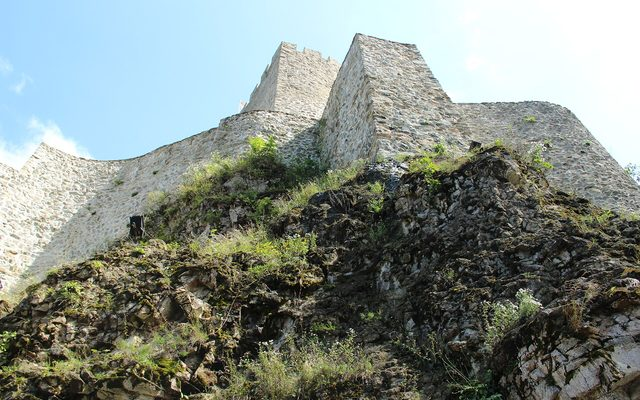
قلعة زيلريزه · قلعة ومبنى تاريخي المدرسة الزنجيرية (السنجارية)ديار بكر · مبنى ديني
المدرسة الزنجيرية (السنجارية)ديار بكر · مبنى ديني زنجيرلي هويوك (سمأل)غازي عنتاب · موقع أثري
زنجيرلي هويوك (سمأل)غازي عنتاب · موقع أثري متحف ضياء كوك ألبديار بكر · متحف
متحف ضياء كوك ألبديار بكر · متحف متحف الطاقة سانترال إسطنبولإسطنبول · متحف
متحف الطاقة سانترال إسطنبولإسطنبول · متحف متحف تشاملك للقاطرات البخاريةإزمير · متحف
متحف تشاملك للقاطرات البخاريةإزمير · متحف متحف تشاناكالي البحريجناق قلعة · متحفمركز التعريف بملحمة جناق قلعةجناق قلعة · متحفساحة إعادة تمثيل الهلال الأحمر في جناق قلعةجناق قلعة · متحف
متحف تشاناكالي البحريجناق قلعة · متحفمركز التعريف بملحمة جناق قلعةجناق قلعة · متحفساحة إعادة تمثيل الهلال الأحمر في جناق قلعةجناق قلعة · متحف متحف جانقريجانقري · متحف
متحف جانقريجانقري · متحف متحف التبادل في تشاتالجاإسطنبول · متحف
متحف التبادل في تشاتالجاإسطنبول · متحف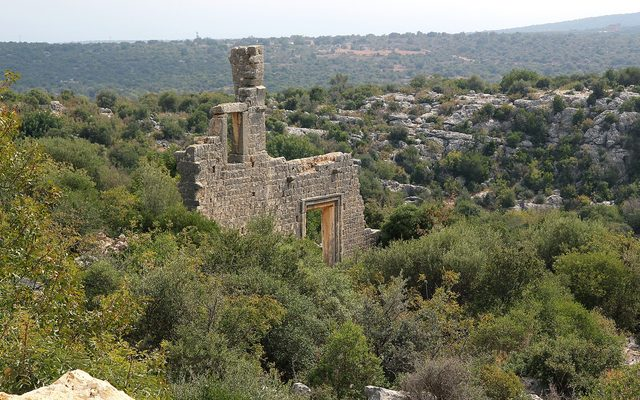
تشاتي أورنمرسين · موقع أثري قلعة تشاوش تبهوان · قلعة ومبنى تاريخي
قلعة تشاوش تبهوان · قلعة ومبنى تاريخي تشاي أونوديار بكر · موقع أثري
تشاي أونوديار بكر · موقع أثري متحف فنون الزجاج المعاصرإسكي شهر · متحف
متحف فنون الزجاج المعاصرإسكي شهر · متحف عمود قسطنطين (جمبرلي طاش)إسطنبول · قلعة ومبنى تاريخي
عمود قسطنطين (جمبرلي طاش)إسطنبول · قلعة ومبنى تاريخي متحف تشنغل خان رحمي كوتشأنقرة · متحفموقع تشفليك الأثريهاتاي · موقع أثري
متحف تشنغل خان رحمي كوتشأنقرة · متحفموقع تشفليك الأثريهاتاي · موقع أثري متحف تشيشمهإزمير · متحف
متحف تشيشمهإزمير · متحف متحف البلاط في كوتاهيةكوتاهية · متحف
متحف البلاط في كوتاهيةكوتاهية · متحف نهر چوروهأرتفين · التجديف في المياه السريعة
نهر چوروهأرتفين · التجديف في المياه السريعة متحف جورومجوروم · متحف
متحف جورومجوروم · متحف بحيرة چيلديرأردهان · بحيرةمتحف أوديمشإزمير · متحف
بحيرة چيلديرأردهان · بحيرةمتحف أوديمشإزمير · متحف كهف أوكوز إينيأنطاليا · موقع أثري
كهف أوكوز إينيأنطاليا · موقع أثري أوكوزلومرسين · موقع أثري
أوكوزلومرسين · موقع أثري مدينة أوزكوناك تحت الأرضنوشهر · مدينة تحت الأرض
مدينة أوزكوناك تحت الأرضنوشهر · مدينة تحت الأرض متحف أورغوبنوشهر · متحف
متحف أورغوبنوشهر · متحف القباب الثلاثأرضروم · مبنى ديني
القباب الثلاثأرضروم · مبنى ديني أوتش أياقليمرسين · موقع أثريإيدروسأنطاليا · موقع أثري
أوتش أياقليمرسين · موقع أثريإيدروسأنطاليا · موقع أثري متحف إلهان كومان للنحت والرسمأدرنة · متحف
متحف إلهان كومان للنحت والرسمأدرنة · متحف متحف إلتر أوزل للطب وطب الأسنانأضنة · متحف
متحف إلتر أوزل للطب وطب الأسنانأضنة · متحف جامع إمراهور إلياس بك (دير ستوديوس)إسطنبول · مبنى دينيمتحف مقر قيادة معارك إينونوإسكي شهر · متحف
جامع إمراهور إلياس بك (دير ستوديوس)إسطنبول · مبنى دينيمتحف مقر قيادة معارك إينونوإسكي شهر · متحف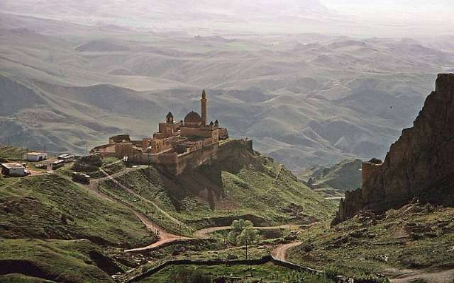
قصر إسحاق باشاآغري · قلعة ومبنى تاريخي متحف الأيقونات في إسكلهإسكله (تريكومو) · متحفالمتحف البحري في الإسكندرونةهاتاي · متحف
متحف الأيقونات في إسكلهإسكله (تريكومو) · متحفالمتحف البحري في الإسكندرونةهاتاي · متحف متحف تاريخ العلوم والتكنولوجيا في الإسلامإسطنبول · متحف
متحف تاريخ العلوم والتكنولوجيا في الإسلامإسطنبول · متحف متحف منزل عصمت إينونوإسطنبول · متحف
متحف منزل عصمت إينونوإسطنبول · متحف متاحف إسطنبول الأثريةإسطنبول · متحف
متاحف إسطنبول الأثريةإسطنبول · متحف متحف إسطنبول البحريإسطنبول · متحف
متحف إسطنبول البحريإسطنبول · متحف برج غلطةإسطنبول · قلعة ومبنى تاريخي
برج غلطةإسطنبول · قلعة ومبنى تاريخي متحف الطيران في إسطنبولإسطنبول · متحفمتحف مطار إسطنبولإسطنبول · متحف
متحف الطيران في إسطنبولإسطنبول · متحفمتحف مطار إسطنبولإسطنبول · متحف متحف إسطنبول للفن الحديثإسطنبول · متحف
متحف إسطنبول للفن الحديثإسطنبول · متحف متحف إسطنبول للألعابإسطنبول · متحف
متحف إسطنبول للألعابإسطنبول · متحف متحف إزمير الأثريإزمير · متحف
متحف إزمير الأثريإزمير · متحف متحف أتاتورك في إزميرإزمير · متحف
متحف أتاتورك في إزميرإزمير · متحف مصنع الثقافة والفن في إزميرإزمير · متحف
مصنع الثقافة والفن في إزميرإزمير · متحف متحف الرسم والنحت في إزميرإزمير · متحف
متحف الرسم والنحت في إزميرإزمير · متحف متحف ذكرى زلزال إزميت والتوعيةقوجه ايلي · متحف
متحف ذكرى زلزال إزميت والتوعيةقوجه ايلي · متحف متحف إزنيكبورصة · متحف
متحف إزنيكبورصة · متحف متحف مدينة عزت قويون أوغلوقونية · متحف
متحف مدينة عزت قويون أوغلوقونية · متحف متحف شانلي أورفا الأثريشانلي أورفا · متحف
متحف شانلي أورفا الأثريشانلي أورفا · متحف قلعة شانلي أورفاشانلي أورفا · قلعة ومبنى تاريخي
قلعة شانلي أورفاشانلي أورفا · قلعة ومبنى تاريخي شابينوفاجوروم · موقع أثري
شابينوفاجوروم · موقع أثري شار (كومانا قبادوقيا)أضنة · موقع أثري
شار (كومانا قبادوقيا)أضنة · موقع أثري خان شاربساأنطاليا · قلعة ومبنى تاريخي
خان شاربساأنطاليا · قلعة ومبنى تاريخي متحف بيت أتاتورك في شبين قره حصارغيرسون · متحف
متحف بيت أتاتورك في شبين قره حصارغيرسون · متحف جامع شهزادهإسطنبول · مبنى ديني
جامع شهزادهإسطنبول · مبنى ديني صهريج شريفية (ثيودوسيوس)إسطنبول · قلعة ومبنى تاريخي
صهريج شريفية (ثيودوسيوس)إسطنبول · قلعة ومبنى تاريخي قرية شيرينجهإزمير · قلعة ومبنى تاريخيمدينة شعيبشانلي أورفا · موقع أثري
قرية شيرينجهإزمير · قلعة ومبنى تاريخيمدينة شعيبشانلي أورفا · موقع أثري